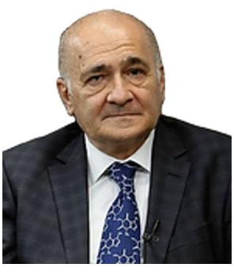

Profile
Hajali Najafoglu is professor of inorganic chemistry at Kafkas University. His doctorate is in inorganic chemistry from the Azerbaijan Academy of Sciences. His master’s degree is in organic chemistry and his first degree is in chemistry, both from Azerbaijan State University. He was an assistant professor at Kafkas University in 1992–1995, an associate professor in 1995–1998, and a professor from 1998. Publications from the 1970s use the name G. N. Nadzhafov.
Work experience
Kafkas University, Kars, Turkey
1998–presentProfessor
- Inorganic chemistry. A further line reads 2003– without a new institution
Kafkas University
1995–1998Associate Professor
Kafkas University
1992–1995Assistant Professor
Atatürk University, Erzurum, Turkey
1991–1992Visiting faculty
Azerbaijan State University, Baku
1988–1991Assistant professor
Azerbaijan Academy of Sciences
1977–1985Senior laboratory assistant, research assistant, engineer, and junior researcher
Education
Doctorate
Inorganic chemistry. Year not stated
Azerbaijan Academy of Sciences
Master’s degree
Organic chemistry. Year not stated
Azerbaijan State University
First degree
Chemistry. Year not stated
Azerbaijan State University
Supervision
- Master’s and doctoral theses — Supervised named theses at Kafkas University
Publications
Peer-reviewed journal articles
1. I. R. Amiraslanov, Kh. S. Mamedov, E. M. Movsumov, F. M. Musaev, and G. N. Nadzhafov. X-Ray Structural Study of Complexes of p -Aminobenzoic Acid with Metals. I. The Crystal and Molecular Structure of bis-(p-Aminobenzoato) Tetraaquo-manganase(II) — Zh. Strukt. Khim., 19(6), 1120 (1978).
2. I. R. Amiraslanov, Kh. S. Mamedov, E. M. Movsumov, F. M. Musaev, A. N. Shnulin, and G. N. Nadzhafov. X-Ray Structural Study of Complexes of p-Aminobenzoic Acid with Metals. II. Crystal and Molecular Structure of bis-(p-Aminobenzoato) Diaquanickel(II). — Zh. Strukt. Khim., 19 (6), 1129 (1978).
3. I. R. Amiraslanov, Kh. S. Mamedov, E. M. Movsumov, F. M. Musaev, A. I. Mager-ramov, and G. N. Nadzhafov. X-Ray Diffraction Study of Complexes of p-Aminobenzoic Acid with Metals. III.The Crystal and Molecular Structure of bis-(p-Aminobenzoato) Triaquacadmium(II). — Zh. Strukt. Khim., 20(3), 498 (1979).
4. I. R. Amiraslanov, Kh. S. Mamedov, E. M. Movsumov, F. M. Musaev and G. N. Nadzhafov. X-Ray Crystallographic Investigation of Complexes of p-Aminobenzoic Acid with Metals. IV. Crystal and Molecular Structure of Di-(p-Aminobenzoato) Tetraaquacobalt(II). — Zh. Strukt. Khim., 20 (6), 1075 (1979).
5. I. R. Amiraslanov, N. Kh. Dzhafarov. G. N. Nadzhafov, Kh. S. Mamedov, E.M. Movsumov, and B. T. Uusubaliev. An X-Ray Structural Study of the Complexes of p-Aminobenzoic Acid with Metals. V. Crystal and Molecular Structure of bis-(p-Aminobenzoato) Lead(II). — Zh. Strukt. Khim., 21(1), 131 (1980).
6. I. R. Amiraslanov, N. Kh. Dzhafarov. G. N. Nadzhafov, Kh. S. Mamedov, E. M. Movsumov, and B. T. Usubaliev. An X-Ray Structural Study of the Complexes of p-Aminobenzoic Acid with Metals. VI. The Crystal and Molecular Structure of Nitrato-(p-Aminobenzoato) Lead(II). — Zh. Strukt. Khim., 21(1), 137 (1980).
7. B. T. Usubaliev, E. M. Movsumov, F. N. Musaev, G. N. Nadzhafov, I. R. Amiraslanov, and Kh. S. Mamedov. Kristalliçeskaya i Molekulyarnaya Struktura Monopiridinata Benzoata Medi(II) [Monopiridinato-Bis-Benzoato Bakır(II) Kompleksi-nin Kristal ve Moleküler Yapısı.] — (Rusça). — Koord. Khim., 6(7), 1091 (1980).
8. I. R. Amiraslanov, G. N. Nadzhafov, B. T. Usuballiev, A. A. Musaev, E. M. Movsumov, and Kh. S. Mamedov. An X-Ray Structural Study of the Complexes of p-Aminobenzoic Acid with Metals. VII. The Crystal Structure of [Zn(p-H2NC6H4COO)2]n.1,5nH2O. — Zh. Strukt. Khim., 21(3), 140 (1980).
9. I. R. Amiraslanov, B. T. Usubaliev, G. N. Nadzhafov, A. A. Musaev, E. M. Movsumov, and Kh. S. Mamedov. An X-Ray Structural Study of the Complexes of p-Aminobenzoic Acid with Metals. VIII. Crystal and Molecular Structure of Silver(I) p-Aminobenzoate. — Zh. Strukt. Khim., 21(5), 112 (1980).
10. B. T. Usubaliev, I. R. Amiraslanov, G. N. Nadzhafov, E. M. Movsumov, F. N. Musaev, and Kh. S. Mamedov. Kristalliçeşkaya i Molekulyarnaya Struktura Bis-Piridin-Bis-(p-Nitrobenzoato) Medi(II) [Bis-(Piridino)-Bis-(p-Nitro-benzoato) Bakır(II) Kompleksinin Kristal ve Moleküler Yapısı]. — (Rusça). — Koord. Khim., 7(3), 440 (1981).
11. N. Kh. Dzhafarov, I. R. Amiraslanov, G. N. Nadzhafov, E. M. Movsumov, and Kh. S. Mamedov. Crystal Structure of Nitrato-(m-Aminobenzoato) Lead. — Zh. Strukt. Khim., 22(2), 121 (1981).
12. N. Kh. Dzhafarov, I. R. Amiraslanov, G. N. Nadzhafov, E. M. Movsumov, F. N. Kerimova, and Kh. S. Mamedov. Crystal and Molecular Structure of Monoaqua-Bis -(p -Hydroxybenzoato) Lead(II) Monohydrate. — Zh. Strukt. Khim., 22(2), 125 (1981).
13. A. N. Shnulin, G. N. Nadzhafov, I. R. Amiraslanov, B. T. Usubaliev, and Kh. S. Mamedov. Ionic Structures of Mg(II) and Co(II) p-Hydroxybenzoate. — Koord. Khim., 7(9), 1410 (1981).
14. A.N. Shnulin, G. N. Nadzhafov, and Kh. S. Mamedov. Crystal and Molecular Structure of Triaqua-Bis-(p-Hydroxybenzoato) Copper(II). — Koord. Khim., 7(10), 1544 (1981).
15. A. N. Shnulin, G. N. Nadzhafov, and Kh. S. Mamedov. Crystal Structure of the Molecular Complex of Pyridine and bis-(p-Hidroxybenzoato)tris-(Pyridine) Cadmium(II). — Zh. Strukt. Khim., 22(3), 106 (1981).
16. G. N. Nadzhafov, B. T. Usubaliev, I. R. Amiraslanov, E. M. Movsumov, and Kh. S. Mamedov. Kristalliçeskaya Struktura bis-Piridin-bis-(p-Oksibenzoato) Tsink(II) Dipiridina [Bis-Piridin- bis-(p-Hidroxibenzoato) Çinko(II) Kompleksinin Kristal Yapısı]. — (Rusça). — Koord. Khim., 7(5), 770 (1981).
17. G. N. Nadzhafov, A. N. Shnulin, and Kh. S. Mamedov. Crystal and Molecular Structure of Di-(p- Nitrobenzoato) Tetraaquocobalt(II) Dihydate. — Zh. Strukt. Khim., 22(6), 124 (1981). 4
18. G. N. Nadzhafov, A. N. Shnulin, Kh. S. Mamedov, and V. I. Shil’nikov. Molecular and Crystal Structure of p-Hydroxybenzoate Cadmium(II) Heptahydrate. — Koord. Khim., 8(9), 1276 (1982).
19. Kh. S. Mamedov, F. N. Musaev, B. T. Usubaliev, G. N. Nadjafov, M. S. Khiyalov. Termiçeskiy Analiz p-Oksibenzoatov Perekhodnıkh Metallov i RZE [Geçiş Metalleri ve Nadir Toprak Elementleri p-Hidroksibenzoatlarının Termik Analizleri]. — (Rusça). — Termicheskiy Analiz: Fazovıye Ravnovesiya. Perm (Rusya Federasyonu), 1984, s.95-101.
20. A. N. Shnulin, G. N. Nadzhafov, and Kh. S. Mamedov. Crystal Structures of Manganase(II) p - Hydroxybenzoate Octahydrate and Trihydrate. — Zh. Strukt. Khim., 25(3), 91 (1984).
21. A. N. Shnulin, G. N. Nadzhafov, and Kh. S. Mamedov. Crystal Structures of Barium(II) p- Hydroxybenzoate Monohydrate. — Zh. Strukt. Khim., 25(4), 89 (1984).
22. H. N. Nadjafov, F. N. Musaev, A. N. Shnulin, and Kh. S. Mamedov. Thermal Behavior of Metal p- Hydroxybenzoates. — Thermochimica Acta, 93, 53 (1985).
23. B. T. Usubaliev, H. N. Nadjafov, A. A. Musaev annd Kh. S. Mamedov. Thermal Decomposition of Silver Arylcarboxylates. — Thermochimica Acta, 93, 57 (1985).
24. F. N. Musaev, G. N. Nadzhafov, and Kh. S. Mamedov. Thermal Decomposition of Metal p- Hydroxybenzoates. — Koord. Khim., 12(1), 37 (1986).
25. B. T. Usubaliev, A. S. Amirov, I. R. Amiraslanov, G. N. Nadzhafov, A. A. Musaev, and Kh. S. Mamedov. Kristalliçeşkaya i Molekulyarnaya Struktura Kompleksa [Pb(o- HOC6H4COO)2.H2O] [Pb(o-HOC6H4COO)2.H2O] Kompleksinin Kristal ve Moleküler Yapısı. — (Rusça). — Koord. Khim., 13(10), 1418(1987).
26. A. M. Abdullaev, G. N. Nadjafov, M. İ. Çiragov, S. A. Kulieva. Kristalliçeskaya Struktura K2[Ni(OOC(CH2)4COO)2]4H2O] K2[Ni(OOC(CH2)4COO)2].4H2O Kompleksinin Kristal ve Moleküler Yapısı— (Rusça). — Koord. Khim., 19(10), 13 (1993).
27. Tuncer Hökelek, Hacali Necefoğlu, and Metin Balcı. Tetrakis (benzoato) bis (N,N’ - diethylnicotinamide) dicopper(II). — Acta Crystallographica, C51, 2020 (1995).
28. Tuncer Hökelek and Hacali Necefoğlu. Bis(-4-Hydroxybenzoato-O:O’)-bis-[N,N’- Diethylnicotinamide-N’) (4-Hydroxybenzoato-O) zinc(II)] Dihydrate. — Acta Crystallographica, C52, 1128 (1996).
29. Tuncer Hökelek, Hüseyin Gündüz, and Hacali Necefoğlu. Trans-Bis (benzoato)bis(N,N’- diethylnicotinamide-N’)] copper(II). — Acta Crystallographica, C52, 2470 (1996).
30. Vahit Alişoğlu et Hacali Necefoğlu. Etude de la Solubilite dans le systeme Na2(NO3)2/Na2(H2PO4)2/ Mn(H2PO4)2/H2O. — C. R. Acad. Sci. Paris, t. 324, serie II b, pp. 1—4 (1997).
31. Tuncer Hökelek and Hacali Necefoğlu. Diaquabis(N,N’-diethylnicotinamide-N’)bis(2- Hydroxybenzoato-O) cobalt(II). — Acta Crystallographica, C53, 187 (1997).
32. Tuncer Hökelek, Kıvanç Budak and Hacali Necefoğlu. Trans-Diaquabis(N,N’- diethylnicotinamide-N’)bis(4-Nitrobenzoato-O)copper(II). — Acta Crystallographica, C53, 1049(1997).
33. Tuncer Hökelek, Kıvanç Budak, Kıvılcım Şendil and Hacali Necefoğlu. Trans - Diaquabis(4- hydroxybenzoato-O)bis(nicotinammide-N)copper(II). — Acta Crystallographica, C54, 347 (1998).
34. Tuncer Hökelek and Hacali Necefoğlu. Trans-Diaquabis(nicotinamide-N) bis(4-nitrobenzoato-O) cobalt II). — Acta Crystallographica, C54, 1242 (1998).
35. Tuncer Hökelek and Hacali Necefoğlu. Trans-Diaquabis(3-aminobenzoato-O)-bis (nicotinamide- N)cobalt(II). - Analytical Sciences, Vol. 15, p.1043, October 1999.
36. Tuncer Hökelek and Hacali Necefoğlu. Trans-Diaquabis(benzoato-O)-bis (nicotinamide- N)cobalt(II). - Acta Crystallographica, C55, 545 (1999).
37. Tuncer Hökelek and Hacali Necefoğlu. Trans-Diaquabis(3-hydroxybenzoato-O)- bis(nicotinamide-N)cobalt(II). - Acta Crystallographica, C55, 1438 (1999).
38. Hacali Necefoğlu, William Clegg and Andrew J. Scott. Diaquabis(N,N- diethyl-nicotinamide)bis(2- hydroxybenzoato)zinc(II). - Acta Crystallographica, E57, m462 (2001).
39. Hacali Necefoğlu, William Clegg and Andrew J. Scott. Diaquabis(N,N- diethyl-nicotinamide)bis(4- nitrobenzoato)zinc(II). - Acta Crystallographica, E57, m465 (2001).
40. Hacali Necefoğlu, William Clegg and Andrew J. Scott. Diaquabis (4-nitrobenzoato) zinc(II): a redetermination. - Acta Crystallographica, E57, m472 (2001).
41. Tuncer Hökelek and Hacali Necefoğlu. Crystal structure of [triaqua(salicylato) (nicotinamide)zinc(II)] salicylate. - Analytical Sciences, Vol. 17, p.1241, October (2001).
42. H. Necefoğlu, Hasan İçbudak, Dursun Ali Köse and Ahmet Uyanık. Thermal Behaviour of the Nicotinamide Adducts of Co(II), Ni(II), Cu(II) and Zn(II) Arylcarboxylates. Callanges for 5 Coordination Chemistry in the New Century. Slovak Technical University Press, Bratislava, 2001, pp.427-432.
43. Hacali Necefoğlu, William Clegg and Andrew J. Scott. Tetrakis(-Benzoato) bis[(N,N- Diethylnicotinamide)Zinc(II)]. - Acta Crystallographica, E58, m121 (2002).
44. Hacali Necefoğlu, William Clegg and Andrew J. Scott. A Linear Trinuclear CaZn2 Complex with Bridging Benzoate Ligand. - Acta Crystallographica, E58, m123 (2002).
45. H. Necefoğlu, T. Hökelek, C.C. Ersanlı, A. Erdönmez. Bis(4-Hydroxybenzoato- κO)bis(Nicotinamide-κN) Zinc(II). - Acta Crystallographica, E58, m758 (2002).
46. H. Necefoğlu, Hasan Içbudak, Ahmet Uyanık and Dursun Ali Köse. Thermal Behaviour of the N,N- Diethylnicotinamide-Acetylsalicylato Complexes of Co(II), Ni(II), Cu(II) and Zn(II). – ABHATH AL-YARMOUK. Basic Sciences and Engineering, Vol. 12, No 2, p.513 (2003).
47. H. Necefoğlu. Crystallographic Patterns in Nature and Turkish Art. - Crystal Engineerıng 6(4), 153 (2003).
48. H. İçbudak, Z. Heren, D.A. Köse, H. Necefoğlu. Bis(Nicotinamide) and bis(N,N-Diethyl nicotinamide) p-Hydroxybenzoate Complexes of Ni(II), Cu(II) and Zn(II) - Spectrothermal Studies. - Journal of Thermal Analysıs and Calorimetry, 76(3), 837 (2004).
49. A. Aslantaş, A. K. Devrim, N. Kaya, H. Necefoglu. Studies on the Interaction Between Zinc- Hydroxybenzoite Complex and Genomic DNA. - International Journal of Molecular Sciences, 7 (4, Apr), 111-118, (2006).
50. Onur Sahin, Orhan Buyukgungor, Dursun Ali Kose, Birgul Zumreoglu-Karan, Hacali Necefoglu. catena-Poly[[[triaquacobalt(II)]-μ-2,6-dioxo-1,2,3,6-tetra-hydropyrimidine-4-carboxylato(2-)]1.72-hydrate]. - Acta Crystallographi-ca, C62, M513 (2006).
51. Tuncer Hökelek and Hacali Necefoğlu. Tetraaquabis[4-(Dimethylamino) Benzoato- κO]Manganese(II) Dihydrate. - Acta Crystallographica, E63, m821 (2007).
52. Tuncer Hökelek and Hacali Necefoğlu. Diaquabis[4-(Dimethylamino)Benzoato-κO]- (Nicotinamide-κN1)Cobalt(II) Dihydrate. - Acta Crystallographica, E63, m1078 (2007).
53. Tuncer Hökelek and Hacali Necefoğlu. Diaquabis[4-(Dimethylamino)Benzoato-κO]- (Nicotinamide-κN1)Manganese(II) Dihydrate. - Acta Crystallographica, E63, m1279 (2007).
54. A. Kadir Devrim, Ali Arslantas, Necati Kaya, Hacali Necefoglu. Effect of Cobalt-Hydroxybenzoate Complex on Genomic DNA. - Asian Journal of Chemistry, 19(3), 2374 (2007).
55. Nagihan Caylak, Tuncer Hökelek, F. Elif Öztürkkan, Hacali Necefoglu. Diaquabis(4- Chlorobenzoato-κO)Bis(Nicotinamide-κN)Cobalt(II). - Acta Crystallographica, E63, m1344 (2007).
56. Nagihan Caylak, Tuncer Hökelek, Hacali Necefoglu. Diaquabis(4-Fluorobenzoato- κO)Bis(Nicotinamide-κN1)Cobalt(II). - Acta Crystallographica, E63, m1341 (2007).
57. D. A. Kose, A. Kaya, H. Necefoglu. Synthesis and Characterization of Bis(N,N- Diethylnicotinamide) m-Hydroxybenzoate Complexes of Co(II), Ni(II), Cu(II), and Zn(II). - Russian Journal of Coordination Chemistry, 33(6), 422 (2007).
58. Onur Sahin, Orhan Buyukgungor, Dursun Ali Kose, F. Elif Öztürkkan, Hacali Necefoglu. Diaquabis(4-Fluorobenzoato-κO)-Bis(Nicofinamide-κN)Cobalt(II). - Acta Crystallographica, C63, M243 (2007).
59. A. Kadir Devrim, Ali Arslantas, Hacali Necefoglu. DNA-Binding Study of Tetraaqua-Bis(p- Nitrobenzoato) Cobalt(II) Dihydrate Complex: [Co(H2O)4(p-NO2C6H4COO)2] Center Dot 2H2O. - International Journal of Molecular Sciences, 8(7), 564, (2007).
60. Tuncer Hökelek, Nagihan Caylak, Hacali Necefoglu. Diaquabis(4-Bromobenzoato-κO)- Bis(Nicotinamide-κN1)Cobalt(II). - Acta Crystallographica, E63, m1873 (2007).
61. F. Elif Öztürkkan, Dursun Ali Kose, Hacali Necefoglu, İbrahim Uzun. Synthesis and Characterization of Bis(N,N-Diethylnicotinamide) p-Halogenobenzoate Complexes of Co(II). - Asian Journal of Chemistry, 19(6), 4880 (2007).
62. Tuncer Hökelek, Nagihan Caylak, Hacali Necefoglu. Diaquabis(N,N-Diethylnicotinamide-κN)- Bis(4-Fluorobenzoato-κO)Zinc(II). - Acta Crystallographica, E63, m2561 (2007).
63. Musa Sari, Gültekin Gökce, Songül Gökce, Ertan Şahin, Hacali Necefoglu. Diaquabis(4- Chlorobenzoato-κO)Bis(N,N'-Diethylnicotinamide-κN)Zinc(II). - Acta Crystallographica, E63, m2191 (2007).
64. Onur Sahin, Orhan Buyukgungor, Dursun Ali Kose, Hacali Necefoglu. Trans-Diaquabis(3- Hydroxybenzoato-κO1)Bis(Nicotinamide-κN1) Copper(II). - Acta Crystallographica, C63, m510 (2007).
65. Ali Arslantas,A. Kadir Devrim, Hacali Necefoglu. The Interaction of Sheep Genomic DNA with a Cobalt(II) Complex Containing p-Nitrobenzoate and N,N'-Diethylnicotinamide Ligands. - International Journal of Molecular Sciences, 8(12), 1225, (2007). 6
66. A. Kadir Devrim, Ali Arslantas, Necati Kaya, Hacali Necefoglu. An Investigation on the Effects of Nickel(II) p-Hydroxybenzoate on Genomic DNA. - Asian Journal of Chemistry, 19(7), 5417 (2007).
67. Tuncer Hökelek, Nagihan Caylak, Hacali Necefoglu. Diaquabis(4-Chlorobenzoato- κO)Bis(N,N- Diethylnicotinamide-κN1) Manganese(II). - Acta Crystallographica, E64, M505-U680 (2008).
68. Tuncer Hökelek, Nagihan Caylak, Hacali Necefoglu. Bis(4-Fluorobenzoato-κ2O,O')Bis- (Nicotinamide-κN1)Zinc(II) Monohydrate. - Acta Crystallographica, E64, M460-U240 (2008).
69. Tuncer Hökelek, Nagihan Çaylak, Hacali Necefoglu. Diaquabis(4-Bromobenzoato-κ2O,O')- Zinc(II). - Acta Crystallographica, E64, M458-U226 (2008).
70. D. A. Kose, H. Necefoglu. Synthesis and Characterization of Bis(Nicotinamide) m- Hydroxybenzoate Complexes of Co(II), Ni(II), Cu(II) And Zn(II). - Journal of Thermal Analysis and Calorimetry, 93(2), 509 (2008).
71. Asli Öztürk, Tuncer Hökelek, Füreya Elif Özbek, Hacali Necefoglu. Diaquabis(4-Bromobenzoato- κO)Bis(N,N'-Diethylnicotinamide-κN1)Zinc(II). - Acta Crystallographica, E64, M1218-U1045 (2008).
72. Onur Sahin, Orhan Buyukgungor, Dursun Ali Kose, Hacali Necefoglu. trans- Diaquabis(Nicotinamide-κN)Bis(Salicylato-κO)Cobalt(II). - Acta Crystallographica, C64, m317 (2008).
73. Onur Sahin, Orhan Buyukgungor, Dursun Ali Kose, Hacali Necefoglu. Crystal Structure of Tetrakis(alaninato)di(μ)aquadicobalt(II) monohydrate. – Analytical Sciences, 24, 269 (2008).
74. A. Kadir Devrim, Ali Arslantas, Necati Kaya, Hacali Necefoglu. An Investigation on the Effects of a Zinc Complex on Goose Genomic DNA. - Asian Journal of Chemistry, 20(8), 5827 (2008).
75. Muhittin Yılmaz, Yusuf Ersan, Musa Karaman, Hasan Özen, Evren Koç and Hacali Necefoğlu. Toxic Effects of Cobalt Parahydroxybenzoate on Tissue Histopathology and Serum Proteins In Capoeta Capoeta Capoeta. - Fresenius Environmental Bulletin, 17(9a), 1322 (2008).
76. Dursun Ali Kose, Hacali, Hasan İçbudak. Synthesis and characterization of N,N- diethylnicotinamide-acetylsalicylato complexes of Co(II), Ni(II), Cu(II), and Zn(II). - Journal of Coordination Chemistry, 61(21), 3508 (2008).
77. Barış Tercan, Tuncer Hökelek, Özgür Aybirdi, Hacali Necefoğlu. Bis[4-(methylamino)benzoato- κO]bis(nicotinamide-κN)zinc(II). - Acta Crystallographica, E65, M109-U1121 (2009).
78. Tuncer Hökelek, Hakan Dal, Barış Tercan, F. Elif Özbek, Hacali Necefoğlu. Diaquabis(2- chlorobenzoato-κO)bis(nicotinamide-κN1)nickel(II). - - Acta Crystallographica, E65, M466- U1104 (2009).
79. Mustafa Sertçelik, Barış Tercan, Ertan Şahin, Hacali Necefoğlu, Tuncer Hökelek. Diaquabis(N,N- diethylnicotinamide-κN1)bis(4-formylbenzoato-κO)cobalt(II). - Acta Crystallographica, E65, M389-U456 (2009).
80. F. Elif Özbek, Barış Tercan, Ertan Şahin, Hacali Necefoğlu, Tuncer Hökelek. Tetraaquabis(nicotinamide-κN1)cobalt(II) bis(2-fluorobenzoate). - Acta Crystallographica, E65, M341-U983 (2009).
81. Mustafa Sertçelik, Barış Tercan, Ertan Şahin, Hacali Necefoğlu, Tuncer Hökelek. Diaquabis(N,N- diethylnicotinamide-κN1)bis(4-formylbenzoato-κO)nickel(II). - Acta Crystallographica, E65, M326-U868 (2009).
82. Mustafa Sertçelik, Barış Tercan, Ertan Şahin, Hacali Necefoğlu, Tuncer Hökelek. Diaquabis(N,N- diethylnicotinamide-κN1)bis(4-formylbenzoato-κO1) manganese(II). - Acta Crystallographica, E65, M324-U856 (2009).
83. Tuncer Hökelek, Hakan Dal, Barış Tercan, F. Elif Özbek, Hacali Necefoğlu. Diaquabis(2- bromobenzoato-κO)bis(nicotinamide-κN1)zinc(II). - Acta Crystallographica, E65, M607-U1270 (2009).
84. Tuncer Hökelek, Hakan Dal, Barış Tercan, Özgür Aybirdi, Hacali Necefoğlu. Diaquabis(4- methylaminobenzoato-κO)bis(nicotinamide-κN1)nickel(II). - Acta Crystallographica, E65, M605- U1260 (2009).
85. Tuncer Hökelek, Hakan Dal, Barış Tercan, F. Elif Özbek, Hacali Necefoğlu. Diaquabis(2- chlorobenzoato-κO)bis(N,N-diethylnicotinamide-κN1)nickel(II). - Acta Crystallographica, E65, M545-U750 (2009).
86. Tuncer Hökelek, Hakan Dal, Barış Tercan, F. Elif Özbek, Hacali Necefoğlu. Diaquabis(2- bromobenzoato-κO)bis(N,N-diethylnicotinamide-κN1) manganese(II). - Acta Crystallographica, E65, M533-U664 (2009).
87. Tuncer Hökelek, Hakan Dal, Barış Tercan, F. Elif Özbek, Hacali Necefoğlu. Diaquabis(2- chlorobenzoato-κO)bis-(N,N-diethylnicotinamide-κN1) manganese(II). - Acta Crystallographica, E65, M513-U497 (2009). 7
88. Tuncer Hökelek, Hakan Dal, Barış Tercan, F. Elif Özbek, Hacali Necefoğlu. Diaquabis(2- bromobenzoato-κO)bis(N,N-diethylnicotinamide-κN1)zinc(II). - Acta Crystallographica, E65, M481-U230 (2009).
89. Tuncer Hökelek, Hakan Dal, Barış Tercan, Özgür Aybirdi, Hacali Necefoğlu. Diaquabis[4- (dimethylamino)benzoato](isonicotinamide)zinc(II). - Acta Crystallographica, E65, M651-U526 (2009).
90. Tuncer Hökelek, Hakan Dal, Barış Tercan, Özgür Aybirdi, Hacali Necefoğlu. Diaquabis[4- (dimethylamino)benzoato]-κO2,O';κO-(isonicotinamide-κN1) cobalt(II). - Acta Crystallographica, E65, M627-U318 (2009).
91. Tuncer Hökelek, Filiz Yılmaz, Barış Tercan, F. Elif Özbek, Hacali Necefoğlu. Diaquabis(2- bromobenzoato-κO)bis(nicotinamide-κN1)nickel(II). - Acta Crystallographica, E65, M768-U749 (2009).
92. Tuncer Hökelek, Filiz Yılmaz, Barış Tercan, F. Elif Özbek, Hacali Necefoğlu. Diaquabis(2- bromobenzoato-κO)bis(N,N-diethylnicotinamide-κN1)nickel(II). - Acta Crystallographica, E65, M766-U739 (2009).
93. Tuncer Hökelek, Hakan Dal, Barış Tercan, Özgür Aybirdi, Hacali Necefoğlu. catena- Poly[[[diaquabis[4-(diethylamino)benzoato-κO]manganese(II)]-mu-aqua] dihydrate]. - Acta Crystallographica, E65, M747-U580 (2009).
94. Tuncer Hökelek, Yasemin Süzen, Barış Tercan, Özgür Aybirdi, Hacali Necefoğlu. Diaquabis(N,N- diethylnicotinamide-κN-1)bis[4-(dimethylamino)benzoato-κO]nickel(II). - Acta Crystallographica, E65, M1015-U1746 (2009).
95. Tuncer Hökelek, Filiz Yılmaz, Barış Tercan, Özgür Aybirdi, Hacali Necefoğlu. Tetrakis[mu-4- (diethylamino)benzoato-κO2:O']bis[(N,N-diethylnicotinamide--κN1)zinc(II)]. - Acta Crystallographica, E65, M955-U1245 (2009).
96. Ali Arslantas, A. Kadir Devrim, Mahmut Sözmen, Hacali Necefoglu. Investigation of DNA-Binding Ability Between Di(p-aminobenzoato)tetraaquacobalt(II) Complex and Cat Genomic DNA. - Asian Journal of Chemistry, 21(8), 5888 (2009)
97. Tuncer Hökelek, Filiz Yılmaz, Barış Tercan, Mustafa Sertçelik, Hacali Necefoğlu. Tetraaquabis(isonicotinamide-κN1)cobalt(II) bis(4-formylbenzoate) dihydrate. - Acta Crystallographica, E65, M1130-U1034 (2009).
98. Tuncer Hökelek, Filiz Yılmaz, Barış Tercan, Ferdi Gürgrn, Hacali Necefoğlu. Tetraaquabis(isonicotinamide-κN1)nickel(II) bis(4-formylbenzoate) dihydrate. - Acta Crystallographica, E65, M1101-U814 (2009).
99. Tuncer Hökelek, Hakan Dal, Barış Tercan, Özgür Aybirdi, Hacali Necefoğlu. Diaquabis(N,N- diethylnicotinamide-κN1)bis[4-(dimethylamino)benzoato-κO] cobalt(II). - Acta Crystallographica, E65, M1051-U398 (2009).
100. Tuncer Hökelek, Hakan Dal, Barış Tercan, Özgür Aybirdi, Hacali Necefoğlu. Diaquabis[4- (dimethylamino)benzoato-κO](isonicotinamide-κN1)manganese (II). - Acta Crystallographica, E65, M1037-U282 (2009).
101. İsmail Çelik, Mehmet Akkurt, Hacali Necefoğlu, Özgür Aybirdi, Santiago Garcia-Granda. 4- (Methylamino)benzoic acid. - Acta Crystallographica, E65, O2574 (2009).
102. Tuncer Hökelek, Filiz Yılmaz, Barış Tercan, Özgür Aybirdi, Hacali Necefoğlu. Tetrakis[μ-4- (methylamino)benzoato-κ2O:O']bis[(N,N-diethyl-nicotinamide-N1)zinc(II)] dihydrate. - Acta Crystallographica, E65, M1328 (2009).
103. Tuncer Hökelek, Hakan Dal, Barış Tercan, F. Elif Özbek, Hacali Necefoğlu. Tetraaquabis(nicotinamide-κN1)nickel(II)bis(2-fluorobenzoate). - Acta Crystallographica, E65, M1330 (2009).
104. Tuncer Hökelek, Hakan Dal, Barış Tercan, Özgür Aybirdi, Hacali Necefoğlu. Bis(isonicotinamide- κN1)bis[4-(methylamino)benzoato]zinc(II) monohydrate. - Acta Crystallographica, E65, M1365 (2009).
105. Tuncer Hökelek, Filiz Yılmaz, Barış Tercan, Mustafa Sertçelik, Hacali Necefoğlu. catena-Poly[[(4- formylbenzoato-κO1)(isonicotinamide-κN1)zinc(II)]- μ-4-formylbenzoato-κ2O1:O1']. - Acta Crystallographica, E65, M1399 (2009).
106. Tuncer Hökelek, Filiz Yılmaz, Barış Tercan, Ferdi Gürgen, Hacali Necefoğlu. Aquabis(4- formylbenzoato-κ2O1,O1')bis(isonicotinamide-κN1) cadmium(II) monohydrate. - Acta Crystallographica, E65, M1416 (2009).
107. Tuncer Hökelek, Hakan Dal, Barış Tercan, Özgür Aybirdi, Hacali Necefoğlu. Tetrakis[μ-4- (dimethylamino)benzoato-κ2O:O']bis[(N,N-diethyl-nicotinamide-κN1)zinc(II)]. - Acta Crystallographica, E65, M1582 (2009). 8
108. Tuncer Hökelek, Filiz Yılmaz, Barış Tercan, F. Elif Özbek, Hacali Necefoğlu. Bis(μ-2- fluorobenzoato-1:2κ2O:O')(2-fluorobenzoato-1κ2O,O')(2-fluorobenzoato-2κO)dinicotinamide- 1κN1,2κN1-dizinc(II)-2-fluorobenzoic acid (1/1). - Acta Crystallographica, E65, M1608 (2009).
109. Hacali Necefoğlu, Efdal Çimen, Barış Tercan, Emal Ermiş and Tuncer Hökelek. Tetrakis(μ-4- methylbenzoato-κ2O:O’)-bis[(isonicotinamide-κN) copper(II)] - Acta Crystallographica, E66, M334 (2010).
110. Hacali Necefoğlu, Efdal Çimen, Barış Tercan, Emal Ermiş and Tuncer Hökelek. Diaquabis(4- methylbenzoato-κO)bis-(nicotinamide-κN1)nickel(II) - Acta Crystallographica, E66, M361 (2010).
111. Hacali Necefoğlu, Efdal Çimen, Barış Tercan, Yasemin Süzen and Tuncer Hökelek. Aquabis(isonicotinamide-κN1)bis(4-methylbenzoato-κO; κ2O,O’)cadmium(II) monohydrate. - Acta Crystallographica, E66, M392 (2010).
112. Ali Arslantas, Mahmut Sozmen, Hacali Necefoglu. Interaction Studies of Bis-(p- aminobenzoato)diaquanickel(II) and Bis-(p-aminobenzoato)triaqua cadmium(II) Complexes with Cat Genomic DNA. - Asian Journal of Chemistry, 22(3), pp. 1709-1716 (2010).
113. Hacali Necefoğlu, Özgür Aybirdi, Barış Tercan, Emel Ermiş and Tuncer Hökelek. Diaquabis(4- methylaminobenzoato-κO)bis(nicotinamide-κN1) cobalt(II). - Acta Crystallographica, E66, M448-U1027 (2010).
114. Hacali Necefoğlu, Efdal Çimen, Barış Tercan, Hakan Dal and Tuncer Hökelek. Tetrakis(μ-4- methylbenzoato-κO2:O')bis[(N,N-diethylnicotinamide-κN1)zinc(II)\]. - Acta Crystallographica, E66, M485-U1376 (2010).
115. Hacali Necefoğlu, Efdal Çimen, Barış Tercan, Hakan Dal and Tuncer Hökelek. Diaquabis(4- methylbenzoato-κO)bis(nicotinamide-κN1) manganese(II). - Acta Crystallographica, E66, M490- U245 (2010).
116. Hacali Necefoğlu, Efdal Çimen, Barış Tercan, Emel Ermiş and Tuncer Hökelek. Diaquabis(N,N- diethylnicotinamide-κN1)bis(4-methylbenzoato-κO) cobalt(II). - Acta Crystallographica, E66, M556-U814 (2010).
117. Hacali Necefoğlu, Özgür Aybirdi, Barış Tercan, Yasemin Suzen and Tuncer Hökelek. Tetraaquabis[4-(methylamino)benzoato-κO]nickel(II). - Acta Crystallographica, E66, M585- U1072 (2010).
118. Tuncer Hökelek, Hakan Dal, Barış Tercan, Efdal Çimen and Hacali Necefoğlu. catena-Poly[[(4- methylbenzoato-κO)manganese(II)]-μ-aqua-bis(μ-4-methylbenzoato-κ2O:O')[(4- methylbenzoato-κO)manganese(II)]-bis(μ-N,N-di-ethylnicotinamide)- κ2N3:O;O:N3]. - Acta Crystallographica, E66, M734 (2010).
119. Tuncer Hökelek, Yasemin Suzen, Barış Tercan, Özgür Aybirdi and Hacali Necefoğlu. Bis[μ-4- (dimethylamino)benzoato]-κ3O,O':O;κ3O:O,O'-bis{aqua[4-(dimethylamino) benzoato- κ2O,O'](nicotinamide-κN1) cadmium(II)}. - Acta Crystallographica, E66, M782 (2010).
120. Tuncer Hökelek, Yasemin Suzen, Barış Tercan, Erdinç Tenlik and Hacali Necefoğlu. Diaqua(isonicotinamide-κN1)(4-methoxybenzoato-κ2O,O')(4-methoxybenzoato-κO)cobalt(II). - Acta Crystallographica, E66, M784 (2010).
121. Tuncer Hökelek, Yasemin Suzen, Barış Tercan, Erdinç Tenlik and Hacali Necefoğlu. Di-μ- nicotinamide-κ2O:N1;κ2N1:O-bis[aquabis(4-methoxybenzoato-κO)copper(II)]. - Acta Crystallographica, E66, M807 (2010).
122. Tuncer Hökelek, Emel Ermiş, Barış Tercan, Efdal Çimen and Hacali Necefoğlu. Bis(μ-4- methylbenzoato-κ2O:O')bis[aqua(4-methylbenzoato-κ2O,O')zinc(II)]-bis(μ-4-methylbenzoato- κ2O:O')bis[(4-methylbenzoato-κO) (nicotinamide-κN)zinc(II)]-water (1/1/2). - Acta Crystallographica, E66, M841 (2010).
123. Tuncer Hökelek, Saka Güner, Barış Tercan, F. Elif Öztürkkan and Hacali Necefoğlu. Diaquabis(2- bromobenzoato-κO)bis(N,N-diethylnicotinamide-κN1) cobalt(II) - Acta Crystallographica, E66, M1132 (2010).
124. Tuncer Hökelek, Saka Güner, Barış Tercan, Erdinç Tenlik and Hacali Necefoğlu. Bis(4- methoxybenzoato)- κ2O,O'; κO-bis(nicotinamide- κN1)zinc(II) - Acta Crystallographica, E66, M1135 (2010).
125. Tuncer Hökelek, Hakan Dal, Barış Tercan, Erdinç Tenlik and Hacali Necefoğlu. Diaquabis(4- methoxybenzoato-κO1)bis(nicotinamide-κN1)cobalt(II) dihydrate - Acta Crystallographica, E66, M910 (2010).
126. Tuncer Hökelek, Hakan Dal, Barış Tercan, Erdinç Tenlik and Hacali Necefoğlu. Diaquabis(4- methoxybenzoato-κO)bis(nicotinamide-κN1)nickel(II) dihydrate - Acta Crystallographica, E66, M891 (2010). 9
127. Ali Arslantas, Mahmut Sozmen, Hacali Necefoglu. Studies on Oxidative Cleavage Activity and DNA-Binding of Zinc Complexes with Diaquabis(N,N-diethylenenicotinamide)bis(salicylato) and Diaquabis(N,N-diethylnicotin-amide) bis(4-nitrobenzoato) - Asian Journal of Chemistry, 22(10), pp. 7648-7654 (2010).
128. Tuncer Hökelek, Ertuğrul Gazi Sağlam, Barış Tercan, Özgür Aybirdi and Hacali Necefoğlu. Tetrakis[μ-4-(diethylamino)benzoato-κ2O:O']bis[(N,N-diethylnicotinamide-κN’)cobalt(II)] - – Acta Crystallographica, E67, M28 (2011).
129. Hacali Necefoğlu, Füreya Elif Özbek, Vedat Aktaş, Barış Tercan and Tuncer Hökelek. Bis(4- ethylbenzoato-κO)bis(nicotinamide-κN1)zinc(II) – Acta Crystallographica, E67, M382 (2011).
130. Hacali Necefoğlu, Ali Maracı, Füreya Elif Özbek, Barış Tercan and Tuncer Hökelek. Diaquabis(N,N- diethylnicotinamide-κN1)bis(4-ethylbenzoato-κO) cobalt(II) – Acta Crystallographica, E67, M619 (2011).
131. Hacali Necefoğlu, Ali Maracı, Vedat Aktaş, Barış Tercan and Tuncer Hökelek. Diaquabis(N,N’- diethylnicotinamide-κN1)bis(4-ethylbenzoato-κO) copper(II) – Acta Crystallographica, E67, M780 (2011).
132. Hacali Necefoğlu, Füreya Elif Özbek, Vijdan Öztürk, Barış Tercan and Tuncer Hökelek. Bis(4- fluorobenzoato)-κ2O,O;κO-(4-fluorobenzoic acid-κO) bis(nicotinamide-κN1)copper(II) – Acta Crystallographica, E67, M887 (2011).
133. Hacali Necefoğlu, Füreya Elif Özbek, Vijdan Öztürk, Barış Tercan and Tuncer Hökelek. Diaquabis(4-bromobenzoato-κO)-bis(nicotinamide-κN1) copper(II) – Acta Crystallographica, E67, M900 (2011).
134. Hacali Necefoğlu, Füreya Elif Özbek, Vijdan Öztürk, Barış Tercan and Tuncer Hökelek. Poly[[diaquamanganese(II)]-bis(μ-4-fluorobenzoato-κ2O:O’)] – Acta Crystallographica, E67, M1003 (2011).
135. Hacali Necefoğlu, Füreya Elif Özbek, Vijdan Öztürk, Vedat Adıgüzel and Tuncer Hökelek. Di-μ- nicotinamide-κ2N1:O;κ2O:N1-bis[aquabis(4-bromo-benzoato-κO;κ2O,O’)-manganese(II)] – Acta Crystallographica, E67, M1128 (2011).
136. Tuncer Hökelek, Barış Tercan, Ertan Şahin, Vedat Aktaş and Hacali Necefoğlu. catena-Poly[[[bis(4- ethylbenzoato-κ2O,O’)lead(II)]-μ-nicotinamide-κ2N1:O]monohydrate] – Acta Crystallographica, E67, M1057 (2011).
137. Hacali Necefoğlu, Füreya Elif Özbek, Vijdan Öztürk, Vedat Adıgüzel and Tuncer Hökelek. Diaquabis(N,N’-diethylnicotinamide-κN1)bis(4-fluorobenzoato-κO)copper(II) – Acta Crystallographica, E67, M1164 (2011).
138. Hacali Necefoğlu, Füreya Elif Özbek, Vijdan Öztürk, Vedat Adıgüzel and Tuncer Hökelek. Diaquabis(4-bromobenzoato-κO)-bis(N,N-diethylnicotinami-de-κN1)-manganese(II) – Acta Crystallographica, E67, M1209 (2011).
139. Hacali Necefoğlu, Füreya Elif Özbek, Vijdan Öztürk, Vedat Adıgüzel and Tuncer Hökelek. Diaquabis(4-bromobenzoato-κO)bis-(N,N-diethylnicotinami-de-κN1)copper(II) – Acta Crystallographica, E67, M1317 (2011).
140. Hacali Necefoğlu, Vijdan Öztürk, Füreya Elif Özbek, Vedat Adıgüzel and Tuncer Hökelek. trans- Diaquabis(4-fluorobenzoato-κO)-bis(nicotinamide-κN1)nickel(II) – Acta Crystallographica, E67, M1638 (2011).
141. Dursun Ali Köse, Hacali Necefoğlu, Onur Şahin and Orhan Büyükgüngör. Synthesis, Spectral, Thermal and Structural Study of Monoaquabis (Acetylsalicylato-κO)bis(Nicotinamide- κN)Copper(II) – Journal of Chemical Crystallography, 41(3), 297 (2011).
142. Hacali Necefoğlu, Vijdan Öztürk, Füreya Elif Özbek, Vedat Adıgüzel and Tuncer Hökelek. trans- Diaquabis(4-fluorobenzoato-κO)-bis(nicotinamide-κN1)nickel(II) – Acta Crystallographica, E67, M1638 (2011).
143. Hacali Necefoğlu, F Elif Özbek, Vijdan Öztürk, Vedat Adıgüzel, Tuncer Hökelek. Aquabis(4- fluorobenzoato-κO)bis(nicotinamide-κN1)copper(II) nicotinamide hemisolvate trihydrate. – Acta Crystallographica, E68, 52(2012).
144. Dursun Ali Köse, Hacali Necefoğlu, Onur Şahin, Orhan Büyükgüngör. Synthesis, structural, spectroscopic characterization, and structural comparison of 3-hydroxybenzoate and nicotinamide/N,N-diethylnicotinamide mixed ligand complexes with Zn(II). – Journal Of Thermal Analysıs and Calorımetry, 110(3), 1233 (2012).
145. İbrahim Göker Zaman, Nagihan Çaylak Delibaş, Hacali Necefoğlu, Tuncer Hökelek. Bis(μ-3- hydroxybenzoato)-κO31,O1':O1; κO31:O1,O1'-bis[(3-hydroxybenzoato-κO2,O') (isonicotinamide- κN1)cadmium] tetrahydrate. – Acta Crystallographica, E68, 198 (2012). 10
146. İbrahim Göker Zaman, Nagihan Çaylak Delibaş, Hacali Necefoğlu, Tuncer Hökelek. trans- Tetraaquabis(isonicotinamide-κN1)nickel(II) bis(3-hydroxybenzoate) tetrahydrate. – Acta Crystallographica, E68, 200 (2012).
147. İbrahim Göker Zaman, Nagihan Çaylak Delibaş, Hacali Necefoğlu, Tuncer Hökelek. trans- Tetraaquabis(isonicotinamide-κN')-cobalt(II) bis(3-hydroxybenzoato) tetrahydrate. – Acta Crystallographica, E68, 249 (2012).
148. İbrahim Göker Zaman, Nagihan Çaylak Delibaş, Hacali Necefoğlu, Tuncer Hökelek. catena- Poly[[(μ-3-hydroxybenzoato-κ3O1,O1':O3)(μ-3-hydroxy-benzoato-κ3O1,O1':O1) (isonikotinamide- κN1)-lead(II)] monohydrate]. – Acta Crystallographica, E68, 257 (2012).
149. Ömür Aydın, Nagihan Çaylak Delibaş, Hacali Necefoğlu, Tuncer Hökelek. Tetrakis(μ-2- iodobenzoato-κ2O:O')bis-[aquacopper(II)]. – Acta Crystallographica, E68, 409 (2012).
150. Ömür Aydın, Nagihan Çaylak Delibaş, Hacali Necefoğlu, Tuncer Hökelek. Diaquabis(2- iodobenzoato-κO)bis-(Nicotinamide-κN')cobalt(II). – Acta Crystallographica, E68, 521 (2012).
151. Ömür Aydın, Nagihan Çaylak Delibaş, Hacali Necefoğlu, Tuncer Hökelek. catena-Poly[[aqua(2- iodobenzoato-κO)cobalt(II)]- μ-2-iodobenzoato-κ2O:O']. – Acta Crystallographica, E68, 601 (2012).
152. Mustafa Sertçelik, Nagihan Çaylak Delibaş, Hacali Necefoğlu, Tuncer Hökelek. Diaquabis(4- formylbenzoato-κO1)bis(nicotinamide-κN1)nickel(II). – Acta Crystallographica, E68, 946 (2012).
153. Mustafa Sertçelik, Nagihan Çaylak Delibaş, Hacali Necefoğlu, Tuncer Hökelek. Diaquabis(4- formylbenzoato-κO1)bis(nicotinamide-κN1)copper(II). – Acta Crystallographica, E68, 1010 (2012).
154. Ömür Aydın, Nagihan Çaylak Delibaş, Hacali Necefoğlu, Tuncer Hökelek. Diaquabis(2- iodobenzoato-κO)bis(nikotinamide-κN1)copper(II). – Acta Crystallographica, E68, 1162 (2012).
155. Öznur Dincel, Barış Tercan, Efdal Çimen, Hacali Necefoğlu, Tuncer Hökelek. Bis(mu-4- metylbenzoato)- κ3O,O':O; κ3O:O,O'-bis[aqua(4-metylbenzoato-κ2O,O')(nicotinamide- kN1)cadmium], – Acta Crystallographica, E68, 1510 (2012).
156. Mustafa Sertçelik, Nagihan Çaylak Delibaş, Sabri Çevik, Hacali Necefoğlu, Tuncer Hökelek. Poly[(mu5-2,2'-bipyridine-5,5'-dicarboxylato)lead(II)]. – Acta Crystallographica, E68, 1196 (2012).
157. Öznur Dincel, Barış Tercan, F. Elif Öztürkkan, Hacali Necefoğlu, Tuncer Hökelek. Diaquabis(2- chlırobenzoato-κO)bis(nicotinamide-κN1)cobalt(II). – Acta Crystallographica, E69, 173 (2013).
158. Nagihan Çaylak Delibaş, Hacali Necefoğlu, Tuncer Hökelek. Diaquabis(2-hydroxybenzoato- κO1)bis(nicotinamide-κN1)cadmium-diaquabis(2-hydroxybenzoato-κ2O1,O1')(nicotinamide- κN)cadmium-water (1/2/4). – Acta Crystallographica, E69, 191 (2013).
159. İbrahim Göker Zaman, Nagihan Çaylak Delibaş, Hacali Necefoğlu, Tuncer Hökelek. trans- Tetraaquabis(isonicotinamide-κN1)zinc bis(3-hydroxybenzoate) tetrahydrate. – Acta Crystallographica, E69, 198 (2013).
160. Mustafa Sertçelik, Nagihan Çaylak Delibaş, Hacali Necefoğlu, Tuncer Hökelek. Bis(mu-4- formylbenzoat-κ2O:O2)bis[(4-formylbenzoato-κ2O,O')bis(isonicotinamide-kN1)copper(II)]. – Acta Crystallographica, E69, 290 (2013).
161. Nihat Bozkurt, Nefise Dilek, Nagihan Çaylak Delibaş, Hacali Necefoğlu, Tuncer Hökelek. Diaquabis(3-chlorobenzoato-κO)bis(nicotinamide-κN1)cobalt(II). – Acta Crystallographica, E69, 349 (2013).
162. Nihat Bozkurt, Nefise Dilek, Nagihan Çaylak Delibaş, Hacali Necefoğlu, Tuncer Hökelek. Bis(3- chlorobenzoato-κ2O,O')bis(nicotinamide-κN)copper(II). – Acta Crystallographica, E69, 356 (2013).
163. Nihat Bozkurt, Nefise Dilek, Nagihan Çaylak Delibaş, Hacali Necefoğlu, Tuncer Hökelek. catena- Poly[aquabis(mu-3-chlorobenzoato-κ2O:O2)zinc]. – Acta Crystallographica, E69, 381 (2013).
164. Nihat Bozkurt, Nefise Dilek, Nagihan Çaylak Delibaş, Hacali Necefoğlu, Tuncer Hökelek. Di-mu- nicotinamide-κ2N1:O; κ2O:N1-bis[aquabis(3-chlorobenzoato-κ2O,O')cadmium]. – Acta Crystallographica, E69, 389 (2013).
165. Nihat Bozkurt, Tuncay Tunç, Nagihan Çaylak Delibaş, Hacali Necefoğlu, Tuncer Hökelek. Tetrakis(mu-3-chlorobenzoato-κ2O:O')bis[(N,N-diethylnicotinamide-κN1)copper(II)]. – Acta Crystallographica, E69, 431 (2013).
166. Nihat Bozkurt, Tuncay Tunç, Nagihan Çaylak Delibaş, Hacali Necefoğlu, Tuncer Hökelek. Aquabis(3-chlorobenzoato-κO)bis(N,N-diethylnicotinamide-κN)copper(II). – Acta Crystallographica, E69, 458 (2013).
167. Nihat Bozkurt, Tuncay Tunç, Nagihan Çaylak Delibaş, Hacali Necefoğlu, Tuncer Hökelek. catena- Poly[[aquabis(3-chlorobenzoato-κ2O,O')cadmium]-mu-N,N-diethylnicotinamide-κ2N1:O]. – Acta Crystallographica, E69, 466 (2013). 11
168. Fatih Çelik, Nefise Dilek, Nagihan Çaylak Delibaş, Hacali Necefoğlu, Tuncer Hökelek. catena- Poly[[diaquabis(4-formylbenzoato-κO1)copper(II)]-mu-pyrazine-κ2N:N']. – Acta Crystallographica, E70, 4 (2014).
169. Fatih Çelik, Nefise Dilek, Nagihan Çaylak Delibaş, Hacali Necefoğlu, Tuncer Hökelek. catena- Poly[[aquabis-(4-formylbenzoato-κ2O1,O1')cadmium]-mu-pyrazine-κ2N:N']. – Acta Crystallographica, E70, 37 (2014).
170. Fatih Çelik, Nefise Dilek, Nagihan Çaylak Delibaş, Hacali Necefoğlu, Tuncer Hökelek. catena- Poly[[diaquabis(4-formylbenzoato-κO1)nickel(II)]-mu-pyrazine-κ2N:N']. – Acta Crystallographica, E70, 65 (2014).
171. Vedat Adıgüzel, Hasan Erge, Vahit Alişoğlu, Hacali Necefoğlu. Study of the solubility, viscosity and density in Na+, Zn2+/Cl- - H2O, Na+ - Zn2+ - (H2PO2)- - H2O, Na+, Cl-/(H2PO2)- - H2O, and Zn2+, Cl-/(H2PO2)- - H2O ternary systems, and in Na+, Zn2+/Cl-, (H2PO2)-//H2O reciprocal quaternary system at 273.15 K – Journal of Chemical Thermodynamics, 75, 35 (2014).
172. Gülçin Şefiye Aşkın, Fatih Çelik, Nefise Dilek, Hacali Necefoğlu and Tuncer Hökelek. Crystal Structure of catena-Poly[[diaquabis(4-formylbenzoato-κO1)cobalt(II)]-mu-pyrazine-κ2N:N']. – Acta Crystallographica, E71, 339 (2015).
173. Gülçin Şefiye Aşkın, Fatih Çelik, Nefise Dilek, Hacali Necefoğlu and Tuncer Hökelek. Crystal Structure of catena-Poly[[diaquabis(4-formylbenzoato-κ2O1,O1’;κO1)zinc(II)]-mu-pyrazine- κ2N:N']. – Acta Crystallographica, E71, 402 (2015).
174. Gülçin Şefiye Aşkın, Hacali Necefoğlu, Ali Murat Tonbul, Nefise Dilek and Tuncer Hökelek. Crystal Structure of Poly[bis(mu-nicotinamide- κ2N1:O)bis(mu-4-nitrobenzoato-κ2O1,O1’)zinc]. – Acta Crystallographica, E71, 479 (2015).
175. Gülçin Şefiye Aşkın, Hacali Necefoğlu, Gamze Yılmaz Nayir, Raziye Çatlak Çelik and Tuncer Hökelek. Crystal Structure of trans-aiaquabis(4-cyanobenzoato-κO)bis(nicotinamide- κN1)cobalt(II). – Acta Crystallographica, E71, 561 (2015).
176. Gülçin Şefiye Aşkın, Hacali Necefoğlu, Gamze Yılmaz Nayir, Raziye Çatlak Çelik and Tuncer Hökelek. Crystal Structure of triaqua(4-cyanobenzoato- κ2O,O’)(nicotinamide-κN1)zinc 4- cyanobenzoate. – Acta Crystallographica, E71, 684 (2015).
177. Erdal Taşdemir, Füreya Elif Özbek, Mustafa Sertçelik, Tuncer Hökelek, Raziye Çatak Çelik, Hacali Necefoğlu. Supramolecular complexes of Co(II), Ni(II) and Zn(II) p- hydroxybenzoates with caffeine: Synthesis, spectral characterization and crystal structure. – Journal of Molecular Structure, 1119 (2016) 472-478.
178. Füreya Elif Özbek, Mustafa Yüksek, Hacali Necefoğlu. Synthesis, spectroscopic and fluorescence properties of N,N-diethylnicotinamide adducts of 2-bromobenzoate Co(II)and Ni(II) metal- organic complexes. – Optik, 127 (2016) 7710–7716.
179. Nurcan Akduran, Hacali Necefoğlu, Ömer Aydoğdu and Tuncer Hökelek. Crystal structure of trans-diaquabis(4-cyanobenzoato-κO)bis(N,N-diethylnicotinamide-κN)zinc(II). – Acta Cryst. (2016). E72, 1374-1376 [doi:10.1107/S2056989016013815]
180. Nurcan Akduran, Mustafa Sertçelik, Ömer Aydoğdu, Hacali Necefoğlu and Tuncer Hökelek Crystal structure of trans-diaquabis(4-cyanobenzoato-κO)bis(N,N-diethylnicotinamide-κN)cadmium. – Acta Cryst. (2016). E72, 1827-1829 [https://doi.org/10.1107/S2056989016018247]
181. Gülçin Şefiye Aşkın, Hacali Necefoğlu, Safiye Özkaya, Raziye Çatak Çelik and Tuncer Hökelek. Crystal structure of diaquabis(4-tert-butylbenzoato-κO)bis(nicotinamide-κN1)cobalt(II) dihydrate. – Acta Cryst. (2016). E72, 888-891 [doi:10.1107/S2056989016008689]
182. Gülçin Şefiye Aşkın, Hacali Necefoğlu, Safiye Özkaya, Raziye Çatak Çelik and Tuncer Hökelek. Crystal structure of diaquabis(N,N-diethylnicotinamide-κN1)bis(2,4,6-trimethylbenzoato- κO1)cobalt(II). – Acta Cryst. (2016). E72, 498-501 [doi:10.1107/S2056989016004059]
183. Nurcan Akduran, Hacali Necefoğlu, Ömer Aydoğdu and Tuncer Hökelek. Crystal structure of catena-poly[[aquabis(4-cyanobenzoato-κO)copper(II)]-μ-N,N-diethylnicotinamide-κ2N1:O]. – Acta Cryst. (2016). E72, 1183-1186 [doi:10.1107/S205698901601183X]
184. Gülçin Şefiye Aşkın, Hacali Necefoğlu, Ali Murat Tonbul, Nefise Dilek and Tuncer Hökelek. Crystal structure of trans-diaquabis(nicotinamide-κN1)bis(4-nitrobenzoato- κO)manganese(II) – Acta Cryst. (2016). E72, 656-658 [doi:10.1107/S2056989016005612]
185. Mustafa Sertçelik, Hacali Necefoğlu, Optimization and Dissolution of Chevreul’s Sult in Ammonium Chloride Solutions. – International Journal of Chemical, Molecular, Nuclear, Materials and Metallurgical Engineering, Vol:10, No:8, 2016.
186. Tuncer Hökelek, Füreya Elif Özbek, Mustafa Sertçelik, Çiğdem Şahin Yenice, Hacali Necefoğlu. Crystal structure and Hirshfeld surface analysis of hexakis(μ-benzoato-κ2O:O’)bis(pyridine-3- carbonitrile- κN1)trizinc(II). – Acta Cryst. (2017). E73, 1966-1970. 12
187. Tuncer Hökelek, Nurcan Akduran, Safiye Özkaya, Hacali Necefoğlu. Crystal structure of catena- poly[[[diaquabis(2,4,6-trimethylbenzoato-κO)cobalt(II)]-μ-aqua-κ2O:O]dihydrate] – Acta Cryst. (2017). E73, 708-712.
188. Tuncer Hökelek, Nurcan Akduran, Azer Özen, Güventürk Uğurlu, Hacali Necefoğlu. Crystal structure of bis(μ-3-nitrobenzoato)-κO,O′:O/κ3O:O,O′-bis[bis(3-cyanopyridine-κN1)(3- nitrobenzoato-κ2O,O′)cadmium]. – Acta Cryst. (2017). E73, 413-416.
189. Tuncer Hökelek, Gizem Sertkaya, Ezgi Ay, Safiye Özkaya, Hacali Necefoğlu. Crystal structure and Hirshfeld surface analysis of diaquabis(isonicotinamide-κN)bis(2,4,6-trimethylbenzoato-κO1) nickel(II) dihydrate. – Acta Cryst. (2017). E73, 1237-1241.
190. Tuncer Hökelek, Şefiye Aşkin Gülçin, Safiye Özkaya, Hacali Necefoğlu. Crystal structure and Hirshfeld surface analysis of aquabis(nicotinamide-κN1)bis(2,4,6-trimethylbenzoato-κO)zinc. – Acta Cryst. (2017). E73, 1348-1352.
191. Füreya Elif Özbek, Gamze Yılmaz Nayir, Hacali Necefoğlu, Sertçelik, Mustafa Yüksek, Raziye Çatak Çelik, Tuncer Hökelek. Cu(II) and Ni(II) 4-cyanobenzoate complexes with nicotinamide: Synthesis, spectral, structural and optical characterization and thermal behavior. – J. Molec. Struct. (2017), 1150, 112-117.
192. Tuncer Hökelek, Safiye Özkaya, Hacali Necefoğlu. Crystal structure and Hirshfeld surface analysis of aqua-bis-(nicotinamide-κN1)bis-(2,4,6-tri-methyl-benzoato-κ2O,O′)cadmium(II). – Acta Cryst. (2018). E74, 246-251.
193. Tuncer Hökelek, Vijdan Yavuz, Hakan Dal, Hacali Necefoğlu. Crystal structure and Hirshfeld surface analysis of aquabis (nicotinamide-κN)bis(4-sulfamoylbenzoato-κO1)copper(II). – Acta Cryst. (2018). E74, 45-50.
194. Tuncer Hökelek, Safiye Özkaya, Hacali Necefoğlu. Crystal structure and Hirshfeld surface analysis of di-aqua-bis-(N,N-di-ethylnicotinamide-κN1)bis-(2,4,6-tri-methyl-benzoato-κO) manganese(II). – Acta Cryst. (2018). E74, 422-427.
195. Füreya Elıf Özbek, Mustafa Sertçelık, Mustafa Yüksek, Güventürk Ugurlu, Ali Murat Tombul, Hacalı Necefoglu, Hökelek Tuncer. Synthesis and Crystallographic, Absorption and Emission Studies of 4-Pyridine Carboxamide of Zn(II) 4-Chlorophenylacetate. – Journal of Fluorescence (2019). 29(5), 1265-1275., Doi: 10.1007/s10895-019-02440-x
196. Teymur Ilyaslı, G. G. Gakhramanova, Hacalı Necefoglu. Kristallizatsiya Stekol na osnove As2S3 s uchastiem Tm metodom DTA. – Eurasian Union Scientists (2019). 2(60), Doi: 10.31618/ESU.2413- 9335.2019.2.60
197. Füreya Elif Özbek, Mustafa Sertçelik, Erdal Taşdemir, Tuncer Hökelek, Raziye Çatak Çelik, Hacali Necefoğlu. Synthesis, Characterization and Crystal Structure of Caffeine Complex of Mn(II) p- Hydroxybenzoate. – Iran. J. Chem. Chem. Eng. (2019). 38(6), pp. 251- 259.
198. Elaheh Teymouri, Abdolali Alemi, Mohammadali Abdollahpour Aghdam Sharabiyani, Leila Sadeghi, Hacali Necefoglu. Synthesizes and characterization of new double tungstate NaRE(WO4)2 (RE= Pr3+, Ho3+, Sm3+). – Materials Chemistry and Physics (2020). 240, 122173, Doi: 10.1016/j.matchemphys.2019.122173.
199. Mustafa Sertçelik, Füreya Elif Özbek, Mustafa Yüksek, Ayhan Elmalı, Ömer Aydoğdu, Hacali Necefoğlu, Tuncer Hökelek. Synthesis, spectral, thermal, structural, optical characterization, and Hirshfield surface analysis of N,N’‑diethylnicotinamide complexes of Mn(II) and Co(II) 4‑cyanobenzoates. – Chemical Papers (2020). 74:2021–2033. https://doi.org/10.1007/s11696-019- 01040-0
200. Füreya Elif Öztürkkan Özbek, Güventürk Uğurlu, Erbay Kalay, Hacali Necefoğlu. Synthesis, characterization and computational studies of 4-[(Pyridine- 3-carbonyl)-hydrazonomethyl]- benzoic acid. – Journal of Molecular Structure 1215 (2020) 128247. https://doi.org/10.1016/j.molstruc.2020.128247
201. Mustafa Sertçelik, Füreya Elif Özbek, Parham Taslimi, Murat Durman, Mücahit Özdemir, Bahattin Yalçın, Hacali Necefoğlu, Tuncer Hökelek. Synthesis, spectroscopic characterization, crystal structure, density functional theory studies and biological properties of coordination complex Ni(II) 2-fluorobenzoate with 3-hydroxypyridine. – Applied Organometallic Chemistry (2020). 34(9), Article Number: e5802. https://doi.org/10.1002/aoc.5802
202. Füreya Elif Öztürkkan Özbek, Güventürk Uğurlu, Erbay Kalay, Hacali Necefoğlu, Tuncer Hökelek. Theoretical and experimental assesment of structural, spectroscopic, electronic and nonlinear optical properties of two aroylhydrazone derivative. – Journal of Molecular Structure. 1223 (2020) 128982. https://doi.org/10.1016/j.molstruc.2020.128982
203. Mustafa Sertçelik, Füreya Elif Özbek, Mustafa Yüksek, Ayhan Elmalı, Ömer Aydoğdu, Hacali Necefoğlu, Tuncer Hökelek. Synthesis, spectral, thermal, structural, optical characterization, and Hirshfield surface analysis of N,N’‑diethylnicotinamide complexes of Mn(II) and Co(II) 13 4‑cyanobenzoates. – Chemical Papers (2020). 74:2021–2033 https://doi.org/10.1007/s11696-019- 01040-0
204. Füreya Elif Öztürkkan Özbek, Güventürk Uğurlu, Erbay Kalay, Hacali Necefoğlu, Tuncer Hökelek. Theoretical and experimental assesment of structural, spectroscopic, electronic and nonlinear optical properties of two aroylhydrazone derivative. – Journal of Molecular Structure. 1223 (2021) 128982. https://doi.org/10.1016/j.molstruc.2020.128982
205. Mustafa Sertçelik, Füreya Elif Öztürkkan Özbek, Parham Teslimi, Erbay Kalay, Hacali Necefoğlu, Tuncer Hökelek. Supramolecular complexes of Ni (II) and Co (II) 4-aminobenzoate with 3- cyanopyridine: Synthesis, spectroscopic characterization, crystal structure, and enzyme inhibitory properties. – Applied Organometallic Chemistry (2021), 35(5), e6182. https://doi.org/10.1002/aoc.6182
206. Füreya Elif Öztürkkan, Mücahit Özdemir, Giray Buğra Akbaba, Mustafa Sertçelik, Bahattin Yalçın, Hacali Necefoğlu, Tuncer Hökelek. Synthesis, crystal structure, potential drug properties for Coronavirus of Co(II) and Zn(II) 2-chlorobenzoate with 3-cyanopyridine complexes. – Journal of Molecular Structure 1250 (2022) 131825. https://doi.org/10.1016/j.molstruc.2021.131825
207. Füreya Elif Öztürkkan, Hacali Necefoğlu. Evaluation of the crystal structures of metal(II) 2- fluorobenzoate complexes. – Physical Sciences Reviews, September 26, 2022. https://doi.org/10.1515/psr-2022-0152
208. Azer Özen, Füreya Elif Öztürkkan, Güventürk Uğurlu, Giray Buğra Akbaba, Mustafa Sertçelik, Tuncer Hökelek, Hacali Necefoğlu. 4-(3-oxo-1,3-dihydroisobenzofuran-1-yl)aminobenzoic acid and its complexes: Synthesis, crystal structures, theoretical calculations and in vitro and in silico antibacterial properties. – Journal of Molecular Structure 1279 (2023) 134932. https://doi.org/10.1016/j.molstruc.2023.134932
209. Füreya Elif Öztürkkan, Elaheh Teymouri, Mustafa Yüksek, Elif Akhueseyin Yıldız, Mustafa Sertçelik, Abdoali Alemi, Hacali Necefoğlu, Tuncer Hökelek. Synthesis, structural characterization and determination of the nitro-containing explosives detection potential of supramolecular lanthanum complex and Lanthana nanoparticles. – Materials Science and Engineering B 290 (2023) 116331. https://doi.org/10.1016/j.mseb.2023.116331
210. Al-Garawi, Z.S., Al-Qaisi, A.H., Al-Shamari, K.A., Öztürkkan, F.E., Necefoğlu, H. (2024) The utility of Hibiscus sabdariffa L. to prepare metal oxides NPs for clinical application on osteoporosis supported by theoretical study, – Bioprocess and Biosystems Engineering, Volume 47, pages 753–766. https://doi.org/10.1007/s00449-024-03012-5
211. Aydoğdu, Ö., Uğurlu, G., Necefoğlu, H., Öztürkkan, F.E., Hökelek, T. (2024) Syntheses, Crystal Structure and Theoretical Properties of Schiff Bases Obtained from Isoniazid and Pyridine-2-, 3-, 4-Carboxaldehyde and Their Zinc(II) Complexes, – ChemistrySelect, 9 (14), e202304861(1 of
212. https://doi.org/10.1002/slct.202304861
213. Öztürkkan, F.E., Özdemir, M., Akbaba, G.B., Yalçın, B., Necefoğlu, H. (2024) Crystal structure, DFT studies, in silico evaluation of as a potential inhibitor against monkeypox virus, and ADMET properties of tetrachlorometallate salts of procaine, – Chemical Papers, 78, 3463–3482. https://doi.org/10.1007/s11696-024-03320-w
214. Al-Garawi, Z.S., Ismail, A.H., Hillo, D.H., Öztürkkan, F.E., Necefoğlu, H., Mohamed, G.G., Abdallah, A.M. (2024) Experimental and density functional theory studies on some metal oxides and the derived nanoclusters: a comparative effects on human ferritin, – Discover Nano, 19 (1),
215. https://doi.org/10.1186/s11671-023-03922-5 ULUSLARARASI BİLİMSEL TOPLANTILARDA SUNULAN VE BİLDİRİ KİTABINDA BASILAN
216. İ. R. Amiraslanov, Kh. S. Mamedov, E. M. Movsumov, G. N. Nadjafov, F. N. Musaev. Kristalliçeskaya i Molekulyarnaya Struktura Gidrata bis-(p-Aminobenzoata) Tsinka [Çinko bis-(p-Aminobenzoat) Hidratının Kristal ve Moleküler Yapısı]. — (Rusça). — Azerbaycan SSC Bilimler Akademisi Meruzeleri, cilt XXXV, No 1, ss. 50-53 (1979).
217. İ. R. Amiraslanov, Kh. S. Mamedov, E. M. Movsumov, G. N. Nadjafov, A. A. Mursaliev. Kristalliçeskaya i Molekulyarnaya Struktura Koordinatsionnogo polimera p-Aminobenzoata Serebra(I) [Gümüş p-Aminobenzoat Koordinasyon Polimerinin Kristal ve Moleküler Yapısı]. — (Rusça). — Azerbaycan SSC Bilimler Akademisi Meruzeleri, cilt XXXV, No 2, ss. 23-25 (1979).
218. İ. R. Amiraslanov, N. Kh. Dzhafarov, G. N. Nadjafov, Kh.S. Mamedov, E. M. Movsumov, B. T. Usubaliev. Kristalliçeskaya Struktura Koordinatsionnogo Kompleksa p-Aminobenzoynoy Kislotı s Nitratom Dvukhvalentnogo Svintsa [İkidğerlikli Kurşun Nitratın p-Aminobenzoik Asitle Kompleksinin Kristal Yapısı]. — (Rusça). — Azerbaycan SSC Bilimler Akademisi Meruzeleri, cilt XXXV, No 3, ss. 49-51 (1979).
219. G. N. Nadjafov, Kh.S. Mamedov, A. N. Shnulin, E. M. Movsumov, İ. R. Amiraslanov, B. T. Usubaliev, A. İ. Akhmedov. Rentgenostrukturnıye İssledovaniya p-Oksibenzoatov Magniya i Kobalta [Magnezyum ve Kobalt p-Hidroksibenzoatların X-Ray Yapı İncelenmesi]. — (Rusça). — Azerbaycan SSC Bilimler Akademisi Meruzeleri, cilt XXXVI, No 5, ss. 36-39 (1980).
220. G. N. Nadjafov, A. N. Shnulin, Kh. S. Mamedov. Kristalliçeskaya i Molekulyarnaya Struktura Piridinovogo Addukta bis-p-Oksibenzoata Cd(II) [Cd(II) p-Hidroksibenzoatın Piridin Adduktunun Kristal ve Moleküler Yapısı]. — (Rusça). — Azerbaycan SSC Bilimler Akademisi Meruzeleri, cilt XXXVI, No 9, ss. 55-57 (1980).
221. P. G. Rustamov, E. A. Mamedov, T. M İlyasov, G. N. Nadjafov, A. S. Alipaşaev, N. S. İsmayılov. Nauçnıye Osnovı Usoverşenstvovaniya Tekhnologii Sinteza Stekol iz Nerudnogo i Rudnogo Sırya Azerbaydjana [Azerbaycan’ın Filiz ve Gayri-Filiz Ham Maddelerinden Cam Üretimi Teknolojisinin Geliştirilmesinin Bilimsel Temelleri]. — (Rusça). — Jeoloji Keşif İşlerinin Geliştirilmesinin İlmi Esasları. Baku, ADU Neşriyatı, 1986, ss. 19-21.
222. G. N. Nadjafov, M. G. Yasinova. Kordiamin Adduktı Benzoata Medi(II) [Bakır(II) Benzoatlarının Kordiamin Adduktları]. – Neorganiçeskiye Soyedineniya – Sintez i Svoystva. Baku, ADU Neşriyatı, 1990, ss. 28-30.
223. G. N. Nadjafov, B. İ. Kerimova, S. A. Kulieva. DENA Kompleksı Benzoatov Kobalta(II) [Kobalt(II) Benzoatlarının DENA Kompleksleri]. — (Rusça). — Fiziki Kimyevi Analiz Sahesinde Tedkikatlar. Baku, ADU Neşriyatı, 1990, ss. 11-13.
224. Dursun Ali Köse, Hasan İçbudak, Hacali Necefoğlu. Synthesis and Characterization of the Nicotinamide-Acetylsalicylato Complexes of Co(II), Ni(II), Cu(II) and Zn(II). – Hacettepe Journal of Biology and Chemistry, 35(2), ss. 123-128 (2007).
225. Özgür Aybirdi, Dursun Ali Köse, Hacali Necefoğlu. Synthesis of the 4-N,N-Dimethylaminobenzoic Acid Complexes of Mn(II), Co(II), Ni(II) and Cu(II). Spectroscopic and Thermal Characterization. – Hacettepe Journal of Biology and Chemistry, 36(1), ss. 31-39 (2008).
226. Yusuf Ersan, Evren Koç, Hacali Necefoğlu, Mehmet Ali Kırpık. Kobalt(II) p-Hidroksibenzoatın Dietilnikotinamid kompleksinin Ergin Fare (Mus Musculus Albinos) Karaciğeri üzerine Histopatolojik Etkileri. – Kafkas Univ. Fen ve Müh. Dergisi, 1(1), ss.1-4 (2008).
227. Vedat Aktaş, Ali Maracı, Hacali Necefoğlu, Füreya Elif Özbek. Metal(II) 4-Etilbenzoatların Karışık –Ligand Komplekslerinin Sentezi ve Karakterizasyonu. – AKÜ FEMÜBİD 15 (2015) 021201 (1-7).
228. Özgür Aybirdi, Hacali Necefoğlu. Metal(II) p-dimetilaminobenzoatların izonikotinamid komplekslerinin sentezi, spektroskopik ve termal karakterizasyonu. – SAÜ Fen Bil Der, 20. Cilt, 2. Sayı, s. 167-175, 2016. 22
229. Güventürk Uğurlu, Hacali Necefoğlu. (1-naftilmetiliden)izonikotinohidrazid molekülünün yapısal ve elektronik özelliklerinin teorik olarak incelenmesi. – Iğdır Üni. Fen Bilimleri Enst. Der. / Iğdır Univ. J. Inst. Sci. & Tech. 8(2): 167-177, 2018.
230. Mustafa Sertçelik, Serkan Sugeçti, Ender Büyükgüzel, Hacali Necefoğlu, Kemal Büyükgüzel. Diaquabis(N,N-dietilnikotinamid-κN1)bis(4-formilbenzoato-κO)kobalt(II) Kompleksinin Model Organizma Galleria mellonella L. (Lepidoptera: Pyralidae) Üzerindeki Toksikolojik ve Fizyolojik Etkileri. – Karaelmas Fen ve Mühendislik Dergisi, 8(1):359-364, 2018.
231. Mustafa Sertçelik, Füreya Elif Özbek, Serkan Sugeçti, Hacali Necefoğlu. 4-Formilbenzoat’ın Co(II), Cu(II) ve Zn(II) ile İzonikotinamid Komplekslerinin Sentezi; Spektroskopik, Termik Özelliklerinin ve Antibakteriyel Etkinliklerinin İncelenmesi – Iğdır Üni. Fen Bilimleri Enst. Der. / Iğdır Univ. J. Inst. Sci. & Tech. 8(4): 189-195, 2018. ULUSAL BİLİMSEL TOPLANTILARDA SUNULAN VE BİLDİRİ KİTABINDA BASILAN
Conference papers and abstracts
1. A. N. Shnulin, G. N. Nadjafov, and Kh.S. Mamedov. Sintez i Stroyeniye Kompleksov p- Oksibenzoynoy Kislotı [p-Hidroksibenzoik Asit Kommplekslerinin Sentezi ve Yapıları] — (Rusça). — Uluslararası XII. Mendeleev Kimya Kurultayı, Bakü. Bildiri Özetleri, Moskova, “Nauka” Neşriyatı, 1981, s. 376.
2. A. N. Shnulin, G. N. Nadjafov, and Kh. S. Mamedov. Structure of p-Hydroxybenzoato Complexes of Metals. — XII. International Congress of Crystallography. Collected Abstracts, Ottawa, Canada, 1981, Abst. No 09-4-25. 14
3. H. N. Nadjafov, A. N. Shnulin and Kh. S. Mamedov. Hydrogen Bonding in Complexes of p- Hydroxybenzoic Acid. — IX. European Crystallographic Meeting, Abstracts, Vol. 1, Torino, Italy, 1985, pp. 342—343.
4. Hacali Necefoğlu Necefov. The First Article About D. I. Mendeleev in Azerbaijan. International Symposium “Modern Science and The Muslim World”, İstanbul, 1987.
5. Paşa Habib oğlu Rustamov, Hacali Necefoğlu Necefov. Chemistry in Hasan Bey Zardabi’s Works. — International Symposium “Modern Science and The Muslim World”, İstanbul, 1987.
6. P. G. Rustamov, T. M. Ilyasov, Ch. I. Abilov,G. N. Nadjafov. Magnetic Susceptibility of Glasses of As2Se3 – GaTe System. – 32nd IUPAC Congress, Stocholm, 2 – 7 August 1989, Book of Abstracts, Ab. No 4014, p. 95.
7. K. A. Agaev, M. I. Chiragov, K. G. Ragimov, G. N. Nadjafov. The Structural Models of Anthimonids of Lead with the Composition PbnSb8S12+n. — 13th European Crystallographic Meeting. 26 – 30 August 1981, Ljubljana, Trieste, Book of Abstracts, p. 277.
8. K. A. Agaev, M. I. Chiragov, K. G. Ragimov, G. N. Nadjafov. The Structural Models of Bithmudids of Lead with the Composition PbnBi2S3+n. — 13th European Crystallographic Meeting. 26 – 30 August 1981, Ljubljana, Trieste, Book of Abstracts, p. 278.
9. T.M. İlyasov, H. N. Necefov. Aşağı Molekul Kütleli Fizioloji Aktiv Birleşmelerin Polimer-Metal Kompleksleri. — Birinci Azerbaycan – Türkiye Polimer Sempozyumu. 8 – 11 Temmuz 1991, Baku, Bildiri Özetler., s. 405-406.
10. Hacali Necefoğlu. Science in Azerbaijan During the Sovyet Period. — Symposium on Science and Technology in the Turkish and Islamic World. Abstracts, İstanbul, 1994, pp. 40—41.
11. Hacali Necefoğlu. The Nikethamide Adducts of Arylcarboxylates. — 35th IUPAC Congress. Abstracts — II, İstanbul, 1995, p.1233.
12. Hacali Necefoğlu. Turkish Ornaments Are Twins of Crystals. ─ XVIII. IUCr Congress, August 4- 13, 1999, Glasgow, Scotland, UK. Collected Abstracts, p. 188.
13. Hacali Necefoğlu, Tuncer Hökelek. Nicotinamide Adducts of Cobalt(II) Arylcarboxylates. – 19th European Crystallographic Meeting. 25th – 31st August 2000, Nancy, France. Abstracts Book, o.m12.p4.
14. Hacali Necefoğlu. Bağımsızlığının 10. Yılında Azerbaycan’da Bilimsel Araştırmaların Durumu. – Bağımsızlıklarının 10. Yılında Türk Cumhuriyetleri Uluslar Arası Sempozyumu. Mayıs, 2001, Istanbul.
15. Hacali Necefoğlu, Hasan Içbudak, Dursun Ali Köse and Ahmet Uyanık. Thermal Behaviour of the Nicotinamide Adducts of Co(II), Ni(II), Cu(II) and Zn(II) Arylcarboxylates. Callanges for Coordination Chemistry in the New Century. Slovak Technical University Press, Bratislava, 2001, pp.427-432.
16. Hacali Necefoğlu, Hasan Içbudak, Ahmet Uyanık and Dursun Ali Köse. Thermal Behaviour of the N,N-Diethylnicotinamide-Acetylsalicylato Complexes of Co(II), Ni(II), Cu(II) and Zn(II). –The Third Jordanian International Conference of Chemistry. 22-26 April 2002, Irbid, Jordan. Abstracts Book, OL-22.
17. Hacali Necefoğlu. Bağımsızlığının 10. Yılında Gürcistan’da Bilimsel Yayınların Durumu. – Akhaltsikhe-Kars Bilim Sempozyumu. 23-24 Mayıs 2002, Akhaltsikhe (Ahıska), Gürcistan.
18. Hacali Necefoğlu and Tuncer Hökelek. Structure of Nicotinamide and Diethylnicotinamide Adducts of Arylcarboxylates. – Algerian Crystallography Congress 1. 2-5 Novomber 2002, Algiers, Algeria. Book of Abstracs, p.30.
19. H. Necefoğlu. Crystallographic Patterns in Nature and Turkish Art. – INDABA IV. Patterns in Nature. 17-22 August 2003, South Africa, Skukuza, Indaba IV Book, p. 28-33.
20. Hacali Necefoğlu. Crystallographic Patterns in Safavid Art. – Safavid Iran Conference. 12 – 14 October 2004, Iran, Tabriz. Abstract of Articles, p. 3.
21. Hacali Necefoğlu. Ermenistan’ın Dış Politikasında Komplementarizm. – Uluslar arası Türk- Ermeni İlişkileri Sempozyumu, 21-22 Haziran 2007, Erzurum, 277-284.
22. Hacali Necefoğlu. Turkish Crystallographic Patterns: From Ancient to Present. Satellite Conference on Mathematical and Theoretical Crystallography "Symmetry and Crystallography in Turkısh Art and Culture", Istanbul, Turkey, 14-16 August 2009. http://www.crystallography.fr/mathcryst/pdf/istanbul/Necefoglu_text.pdf
23. Onur Şahin, Orhan Büyükgüngör, Dursun Ali Köse, Hacali Necefoğlu. Diaquabis(3- Hydoxybenzoato-κO)bis(nicotinamide- N1)copper(II) – 25th European Crystallographic Meeting, 16-21 August 2009, İstanbul, Abstracts, p. 264.
24. Mustafa Sertçelik, Barış Tercan, Ertan Şahin, Tuncer Hökelek, Hacali Necefoğlu. Mangan(II), Kobalt(II) ve Nikel(II) 4-Formilbenzoatların N,N-Dietilnikotinamid Adduktlarının Sintezi ve 15 Kristal Quruluşları. – Bakı Dövlәt Universitetinin 90 İllik Yubileyine Hesr Olunmuş Beynәlxalq Elmi Konfransın Materialları. Tәbiәt Elmlәri, s.320, 321, Bakü, 2009.
25. Füreya Elif Özbek, Barış Tercan, Ertan Şahin, Tuncer Hökelek, Hacali Necefoğlu. Tetraaqvqbis(nikotinamid)kobalt(II)bis(2-flüorobenzoat) Kompleksinin Sintezi vә Kristal Quruluşu. – Bakı Dövlәt Universitetinin 90 vә Kimya Fakültәsinin 75 İllik Yubileyine Hesr Olunmuş IV Respublika Elmi Konfransı. 22-23.10.2009, Bakü, 2009, s. 29-31.
26. Г. Неджефоглу. Орнаменты - Исторический Память Тюрков. – “Türk Dünyası: Geçmişi ve Bugünü” Uluslararası Türkoloji Sempozyumu. 28-29 Nisan 2011, Astana, Kazakistan. Bidiri Kitabı, s. 85.
27. Füreya Elif Özbek, Hacali Necefoğlu, Vedat Adıgüzel, Sevilay Demirci, Hasan Erge. Kobalt(II) p- Floro-, p-Kloro-, p-Bromobenzoat Nikotinamid Komplekslerinin Termik Analizi. – 1st International Chemistry and Chemical Engineering Conference. 17-21.04.2013, Baku, 2013, Abstracts and Proceedings, p. 52.
28. Vedat Adıgüzel, Sevilay Demirci, Füreya Elif Özbek, Hacali Necefoğlu, Hasan Erge. NaCl – Zn(H2PO2)2 – H2O Üçlü Sisteminin 0º C’de Çözünürlüğünün ve Faz Dengelerinin Araştırılması. – 1st International Chemistry and Chemical Engineering Conference. 17-21.04.2013, Baku, 2013, Abstracts and Proceedings, p. 54.
29. Hacali Necefoglu. Crystallographic Ornaments in the Ancient Architecture of Turkmenistan. – Materials of the International Scientific Conference “Thousand-Year Sources of Building Culture of Turkmenistan”, Ashgabat-Mary, Novomber 13-14, 2013, pp. 67, 167, 259.
30. H. Necefoğlu, T. Hökelek, F. Çelik, N. Dilek, N. Ç. Delibaş. Synthesis and Structural Investigation of catena-Poly[[aquabis(4-formylbenzoato-κ2O1,O1’)cadmium]-μ-pyrazine-κ2N:N’]. – The 22nd Iranian Seminar of Organic Chemistry, 19-21 August, Tabriz, Iran.
31. H. Necefoğlu, T. Hökelek, F. Çelik, N. Dilek, N. Ç. Delibaş. Synthesis and Structural Investigations of Coordination Polymers: Pyrazine Adducts of Copper(II) and Nickel(II) 4- Formylbenzoates. – The 22nd Iranian Seminar of Organic Chemistry, 19-21 August, Tabriz, Iran.
32. Teymur Ilyasly, Rana Abbasova, Vedat Adıgüzel, Hacali Necefoğlu. Study of Semiconductor systems of Ln-As-X Type (Ln=Sm, Yb, Eu and X=S, Se, Te). – International Semiconductor Science Technology Conference, 11-13 May 2015 İzmir, Abstract Book, p.74.
33. F. Elif Özbek, Mustafa Yüksek, Hacali Necefoğlu. Synthesis, Spectroscopic and Fluorescence Properties of N,N’-Diethylaminonicotinamide Adducts of 2-Bromobenzoates Co(II) and Ni(II). – 1st International Turkic World Conference on Chemical Sciences and Technologies. 27 October – 1 Novomber 2015 Sarajevo, PO-16, Book of Abstracts, Volume 1, p. 146.
34. Hacali Necefoğlu, F. Elif Özbek, Mustafa Sertçelik. A Review on Crystal Structures of N, N’- Diethylnicotinamide Complexes of Metal Arylcarboxylates. – 1st International Turkic World Conference on Chemical Sciences and Technologies. 27 October – 1 Novomber 2015 Sarajevo, PO- 17, Book of Abstracts, Volume 1, p. 147.
35. Hacali Necefoğlu. Müsteqillik Döneminde Azerbaycanda Elmi Eserlerin Durumu. – Müasir Kimya ve Biologiyanın Aktual Problemleri Beynelxalq Elmi Konfransı, 12-13 May 2016, Gence, Azerbaycan. I. Hisse, s. 231-235.
36. Mustafa SERTÇELİK, Hacali NECEFOĞLU, Turan ÇALBAN, Soner KUŞLU. Hidrometalurjik Metotla Amonyum Klorür Çözeltilerinde Chevreul Tuzunun Çözündürülmesinin Kinetiği. – Uluslararası Ekoloji 2016 Adnan Aldemir Sempozyumu. 16-19 Mayıs 2016, Kars, Özet Bildiri Kitabı, s. 70.
37. Hacali Necefoğlu, F. Elif Özbek, Mustafa Sertçelik, Tuncer Hökelek. Structural Behaviour Of Nicotinamide Complexes of Zinc Arylcarboxylates. – The 2nd International Turkic World Conference on Chemical Sciences and Technologies, 26-30 October 2016, Skopje, Makedonia. Book of Abstracts, p. 103.
38. Hacali Necefoğlu. Bağımsızlık Döneminde (1991-2015) Azerbaycan’da Bilimsel Yayınların Durumu. – Uluslararası Bilim ve Teknoloji Konferansı, 3-6 Ekim 2016, Ankara. – Yeni Türkiye, Cilt 88, Bilim ve Teknoloji Özel Sayısı - I, s. 375-379.
39. Güventürk Uğurlu, Haydar Yüksek, Murat Beytur, Hacali Necefoğlu. Therotical Molecular Structure, NLO, NMR and HOMO-LUMO Analysis of Isonicotinic Acid (orto-, meta- and para- Hydroxybenzylidene)-Hydrazides. – International Physics Conference at the Anatolian Peak, 25 – 27 February 2016, Erzurum, Turkey, Abstracts, p.35; – International Journal of Thales Natural Sciences (IJTNS), Vol. 1, No 2, pp. 1-9.
40. Sertçelik Mustafa, Necefoğlu Hacali, Çalban Turan, Kuşlu Soner (2016). Optimization of Dissolution of Chevreul s Salt in Ammonium Chloride Solutions. 18th International Conference on Chemical and Molecular Imaging (Tam Metin Bildiri/Sözlü Sunum)(Yayın No:3266645) 16
41. Necefoğlu Hacali, Özbek Füreya Elif,Sertçelik Mustafa,Hökelek Tuncer (2016). Structural Behaviour Of Nicotinamide Complexes of Zinc Arylcarboxylates. The 2nd International Turkic World Conference on Chemical Sciences and Technologies, 103-103. (/)(Yayın No:3100942)
42. Necefoğlu Hacali (2016). Bağımsızlık Döneminde 1991 2015 Azerbaycan da Bilimsel Yayınların Durumu. Uluslararası Bilim ve Teknoloji Konferansı, 88, 375-379. (Tam Metin Bildiri/)(Yayın No:3101171)
43. Sertçelik Mustafa, Necefoğlu Hacali, Çalban Turan, Kuşlu Soner (2016). Optimization of Dissolution of Chevreul s Salt in Ammonium Chloride Solutions. 18th International Conference on Chemical and Molecular Imaging (Tam Metin Bildiri/Sözlü Sunum)(Yayın No:3266645)
44. Sertçelik Mustafa, Necefoğlu Hacali, Çalban Turan,Kuşlu Soner (2016). Hidrometalurjik Metotla Amonyum Klorür Çözeltilerinde Chevreul Tuzunun Çözündürülmesinin Kinetiği. Uluslararası Ekoloji 2016 Adnan Aldemir Sempozyumu. (Özet Bildiri/Sözlü Sunum)(Yayın No:3100833)
45. Necefoğlu Hacali (2016). Müsteqillik Döneminde Azerbaycanda Elmi Eserlerin Durumu. Müasir Kimya ve Biologiyanın Aktual Problemleri Beynelxalq Elmi Konfransı, 1, 231-235. (Tam Metin Bildiri/)(Yayın No:3100733)
46. Uğurlu Güventürk, Yüksek Haydar, Beytur Murat,Necefoğlu Hacali (2016). Therotical Molecular Structure NLO NMR and HOMO LUMO Analysis of Isonicotinic Acid orto- meta- and para- Hydroxybenzylidene Hydrazides. International Physics Conference at the Anatolian Peak, 1(2), 1-9. (Tam Metin Bildiri/)(Yayın No:3101422)
47. Necefoğlu Hacali, Uğurlu Güventürk (2017). Theoretical Investıgations On The Linear, Nonlinear Optical, Structural and Electronic Properties of Nicotinic Acid and Its Derivatives. 3rd International Conference on New Trends in Chemistry April 28-30, 2017, Helsinki/Finland (Özet Bildiri/Sözlü Sunum)(Yayın No:3767327)
48. Uğurlu Güventürk, Necefoğlu Hacali (2017). Theoretıcal Studıes on The Molecular Structure, Conformational and Vibrational Analysıs of 4-(Methoxycarbonyl) Phenylboronic Acıd. 3rd International Conference on New Trends in Chemistry April 28-30, 2017, Helsinki/Finland (Özet Bildiri/Sözlü Sunum)(Yayın No:3767296)
49. Özen Azer, Sertçelik Mustafa, Özbek Füreya Elif, Hökelek Tuncer, Necefoğlu Hacali (2017). Synthesis and Characterization of Co(II), Ni(II) and Cd(II) Mixed Ligand Complexes Containing Nitrobenzoate and 3-pyridinecarbonitrile. 3rd Internatıonal Turkic World Conference on Chemıcal Sciences and Technologies (Özet Bildiri/Sözlü Sunum)(Yayın No:4075734)
50. Sertçelik Mustafa, Özbek Füreya Elif, Bozkurt Nihat, Necefoğlu Hacali (2017). Synthesis, Spectral, Thermal Behavior of Nicotinamide Complexes of Cu(II), Co(II) and Cd(II) 3-Chlorobenzoates. 3rd International Turkic World Conference on Chemical Sciences Technologies (Özet Bildiri/Poster)(Yayın No:3747956)
51. Uğurlu Güventürk, Necefoğlu Hacali (2017). Theoretical Investigation on Structural, Electronic and the Nonlinear Optical Properties of 2-And 4-Substituted Benzohydrazides. Turkish Physical Society 33. International Physics Congress (Özet Bildiri/Sözlü Sunum)(Yayın No:4076370)
52. Necefoğlu Hacali, Sertçelik Mustafa, Özbek Füreya Elif, Yüksek Mustafa, Çatak Çelik Raziye, Hökelek Tuncer (2017). Ni(II) ve Cu(II) 4-Sianobenzoatın Nikotinamid Komplekslerinin Sintezi, Quruluşu, Termik ve Optik Xassәlәri. Actual Problems of The Modern Nature Sciences, 1, 45-47. (Özet Bildiri/Sözlü Sunum)(Yayın No:3747774)
53. Necefoğlu Hacali, Özkaya Safiye, Akduran Nurcan, Hökelek Tuncer (2017). Sink(II) 2,4,6- Trimetilbenzoatın İzonikotinamid Kompleksinin Sintezi ve Kristal Quruluşu. Actual Problems of the Modern Nature Sciences, 216-219. (Tam Metin Bildiri/Sözlü Sunum)(Yayın No:4076114)
54. Taşdemir Erdal, Özbek Füreya Elif, Sertçelik Mustafa, Hökelek Tuncer, Çatak Çelik Raziye, Necefoğlu Hacali (2017). Co(II), Ni(II), Zn(II) ve Mn(II) p-Oksibenzoatların Kafein İle Komplekslerinin Sentezi, Spektral Karakterizasyonu ve Kristal Yapısı. Actual Problems of the Modern Nature Sciences, 1, 50-52. (Tam Metin Bildiri/Sözlü Sunum)(Yayın No:3829708)
55. İlyaslı Teymur, Gahramanova G G, Necefoğlu Hacali, İsmailov Z I (2017). Физико-Химические Свойства Стекол На Основе Сульфида Мышьяка. Actual Problems of the Modern Nature Scienses, 1, 135-138. (Tam Metin Bildiri/Sözlü Sunum)(Yayın No:4099927)
56. Necefoğlu Hacali, Özbek Füreya Elif, Sertçelik Mustafa, Hökelek Tuncer (2017). A Brief Rewiew on the Crystal Structures of Copper(II) Arylcarboxylates with Nicotinamide. 3rd International Turkic World Conference on Chemical Sciences Technologies (Özet Bildiri/Sözlü Sunum)(Yayın No:3747822)
57. Necefoğlu Hacali, Özbek Füreya Elif, Sertçelik Mustafa, Özkaya Safiye (2017). Nicotinamide Complexes of Ni(II), Mn(II) and Zn(II) p-tert-butylbenzoates. 3rd International Turkic World Conference on Chemical Sciences Technologies (Özet Bildiri/Poster)(Yayın No:4080124) 17
58. Necefoğlu Hacali, Özbek Füreya Elif, Sertçelik Mustafa, Hökelek Tuncer (2017). Metal Arilkarboksilatların Kordiamin Komplekslerinin Quruluş Analizleri. Chemistry of Coordination Compounds. Actual Problems of Analytical Chemistry Materials of the International Scientific Conference Dedicated to the 85th Anniversary of the Academician Rafiga Alirza Gızı Aliyeva, 22-23. (Özet Bildiri/Sözlü Sunum)(Yayın No:3828571)
59. Özbek Füreya Elif, Sertçelik Mustafa, Yüksek Mustafa, Şahin Ertan, Necefoğlu Hacali (2017). Three new Cd(II) 3-Fluorobenzoates Complexes Containing N-Donor ligands: Classical and Hydrothermal Synthesis, Structral Characterization, Absorption and Emmision Properties. Koordinasion Birlәşmәlәr Kimyasi: Analitik Kimyanin Aktual Problemlәri Akademik Rәfiqә Əlirza Qizi Əliyevanin 85 İllik Yubileyinә Hәsr Olunmuş Beynәlxalq Elmi Konfransı (Özet Bildiri/Sözlü Sunum)(Yayın No:4079078)
60. Sertçelik Mustafa, Özbek Füreya Elif, Yüksek Mustafa, Aydoğdu Ömer, Necefoğlu Hacali (2017). Synthesis, Spectral, Thermal and Optical Characterization Mn(II), Co(II) and Cu(II) 4- cyanobenzoate complexes with N,N’-Diethynicotinamide. Koordinasion Birlәşmәlәr Kimyasi: Analitik Kimyanin Aktual Problemlәri Akademik Rәfiqә Əlirza Qizi Əliyevanin 85 İllik Yubileyinә Hәsr Olunmuş Beynәlxalq Elmi Konfransı (Özet Bildiri/Sözlü Sunum)(Yayın No:4078900)
61. Özbek Füreya Elif, Sertçelik Mustafa, Şahin Ertan, Necefoğlu Hacali, Çakmak İsmail (2017). Synthesis, Spectroscopic Investigationsand DFT Calculations of Diaquabis(2- Fluorobenzoato- Κ-O)Bis(N,N’-Diethylnicotinamide-kN’)Cobalt(II). 9th International Symposium on Image Processing, Wavelet and Applications (Özet Bildiri/Sözlü Sunum)(Yayın No:4078441)
62. Necefoğlu Hacali (2017). Состояние научных публикаций в Грузии в период независимости (1991-2016). Intercultural Dialogues, 483-487. (Tam Metin Bildiri/Sözlü Sunum)(Yayın No:4099728)
63. Necefoğlu Hacali, Hökelek Tuncer, Özbek Füreya Elif, Sertçelik Mustafa (2018). A Review on Crystal Structures of Isonicotinamide Complexes of Metal Arylcarboxylates. ICINSE 2018 - 2nd International Conference on Innovations in Natural Science Engineerıng, 132-140. (Tam Metin Bildiri/Sözlü Sunum)(Yayın No:4519000)
64. Özbek Füreya Elif, Sertçelik Mustafa, Öztürk Vijdan, Necefoğlu Hacali (2018). Mn(II) 4- Bromobenzoatın Nikotinamid ve Dietilnikotinamid Komplekslerinin Sintezi ve Xasseleri. Müasir tabiet ve iqtisad elmlerinin aktual problemleri, 58-60. (Tam Metin Bildiri/Sözlü Sunum)(Yayın No:4367014)
65. Özbek Füreya Elif, Sertçelik Mustafa, Aktaş Vedat, Necefoğlu Hacali (2018). Zn(II) ve Pb(II) 4- Etilbenzoatların Nikotinamid Komplekslerinin, Sintezi, Spektroskopık Xasseleri ve Termik Davamlılıqları. Müasir tabiet ve iqtisad elmlerinin aktual problemleri, 56-57. (Tam Metin Bildiri/Sözlü Sunum)(Yayın No:4367023)
66. Sertçelik Mustafa, Sugeçti Serkan, Büyükgüzel Ender, Necefoğlu Hacali, Büyükgüzel Kemal (2018). Effects of Diaquabis(N,N-diethylnicotinamide-kn)bis(4-formylbenzoato-kO)cobalt(II) Complex on Enzime Activity of Galleria Mellonella L(Lepidoptera:Pyralidae) as Model Organizm. International Scientific Conference Actual Problems of Modern Nature and Economic Sciences, 1, 136-138. (Tam Metin Bildiri/Sözlü Sunum)(Yayın No:4759273)
67. Sertçelik Mustafa, Özbek Füreya Elif, Bozkurt Nihat, Necefoğlu Hacali (2018). Cu(II) ve Cd(II) 3- Xlorobenzoatların Kordiamin Komplekslerinin Sintezi vә Xasseleri. Müasir tabiet ve iqtisad elmlerinin aktual problemleri, 71-72. (Tam Metin Bildiri/Sözlü Sunum)(Yayın No:4367006)
68. Hökelek Tuncer, Yavuz Vicdan, Dal Hakan, Necefoğlu Hacali (2018). Synthesis, Crystal Structure and Hirshfeld Surface Analysis of Nicotinamide Complex of Copper(II) 4-Sulfamoylbenzoate. Actual Problems of Chemistry, 40-41. (Özet Bildiri/Sözlü Sunum)(Yayın No:4334097)
69. Gakhramanova G G, İlyaslı Teymur, Necefoğlu Hacali (2018). İssledovanie Razreza As2Se3-Tm. Actual Problems of Chemistry, 104-105. (Özet Bildiri/Sözlü Sunum)(Yayın No:4671559)
70. Özbek Füreya Elif, Sertçelik Mustafa, Hökelek Tuncer, Necefoğlu Hacali, Delibaş Nagihan, Yılmaz Filiz, Tercan Mustafa Barış (2018). Crystal Structures of Nicotinamide Complexes of Zinc(II) Fluorobenzoates, 38-39, Baku-Azerbaycan, 3-4 May 2018.(Sözlü Bildiri). Ümummilli lider Heydәr Əliyevin anadan olmasının 95-ci ildönümünә hәsr olunmuş doktorant, magistr vә gәnc tәdqiqatçıların “Kimyanın aktual problemlәri” adlı XII Beynәlxalq elmi konfransı, 38-39. (Özet Bildiri/Sözlü Sunum)(Yayın No:4366797)
71. Necefoğlu Hacali, Kalay Erbay, Uğurlu Güventürk (2018). Synthesis, Characterization and Computational Studies of N’-(4- carboxybenzylidene) nicotinohydrazide. International Conference on Innovations in Natural Science and Engineering (ICINSE 2018) (Özet Bildiri/Sözlü Sunum)(Yayın No:4444116)
72. Uğurlu Güventürk, Yenice Hilal, Necefoğlu Hacali (2018). Experimental and Computational Studies of Structural, Electronic and Non-Linear Optical Properties of 2,3-, 2,4-, 2,5-, 2,6- 18 Difluorophenylboronic Acid Molecules. 1stInternational Conference on Innovations in Natural Science and Engineering (ICINSE 2018), 76 (Özet Bildiri/Sözlü Sunum)(Yayın No:4769758)
73. Necefoğlu Hacali, Özbek Füreya Elif, Sertçelik Mustafa, Hökelek Tuncer (2019). Cu(II) Arılkarboksılatların Bazı Piridin Türevler ile Komplekslerinin Yapısal Özellikleri. VII. Ulusal Anorganik Kimya Kongresi (Uluslararası Katılımlı), 167-173. (Tam Metin Bildiri/Sözlü Sunum)(Yayın No:5819323)
74. Sertçelik Mustafa, Özbek Füreya Elif, Özkaya Safiye, Necefoğlu Hacali (2019). Co(II) ve Mn(II) 2,4,6-trimetilbenzoatların dietilnikotinamid komplekslerinin Sintezi ve xasseleri. Actual Problems of Modern Natural and Economic Sciences, 107-109. (Tam Metin Bildiri/Sözlü Sunum)(Yayın No:5819494)
75. Özbek Füreya Elif, Sertçelik Mustafa, Yavuz Vijdan, Necefoğlu Hacali (2019). Synthesis, Spectroscopic Properties and Thermal Stabilities of nicotinamide Complexes of Cu(II) and Ni(II) 4-Fluorobenzoate. Actual Problems of Modern Natural and Economic Sciences, 113-114. (Tam Metin Bildiri/Sözlü Sunum)(Yayın No:5819570)
76. İlyaslı Teymur, Gakhramanova G G, Necefoğlu Hacali, Ismailov Zakir Islam (2019). Quasibınary Cuts Tm-Ass and As-Tms Triple System Tm-As-S. International Conference “Scientific research of the SCO countries: synergy and integration”, 200-208. (Tam Metin Bildiri/Sözlü Sunum)(Yayın No:5925092)
77. Füreya Elif Özbek, Giray Buğra Akbaba, Mustafa Sertçelik, Hacali Necefoğlu (2020). Tetra-µ-2- klorobenzoato-κ8O:O’-bis[(4-siyanopiridin-κN)bakir(II)] Kompleksinin Sentezi, Yapisi ve Antibakteriyel Özelliklerinin Incelenmesi. - Koordinasion Birleşmeler Kimyasi VIII Beynelxalq Elmi Konfransı, 86-89. (Tam Metin Bildiri/Sözlü Sunum)
78. Hacali Necefoğlu, Giray Buğra Akbaba, Füreya Elif Özbek, Mustafa Sertçelik, Cem Öztürk (2020). Bis (µ-2-florobenzoato-1:2κ2O:O)(2-florobenzoato-1κ2O,O′)(2-fluoroBenzoato-2κO) dinikotinamid-1κN1, 2κN1-diçinko(II)–2-florobenzoik Asid (1/1) Kompleksinin Hirshfeld Yüzey Analizi ile Moleküller Arası Etkileşimlerinin Belirlenmesi ve Antibakteriyel Özelliklerinin İncelenmesi. - Koordinasion Birleşmeler Kimyasi VIII Beynelxalq Elmi Konfransı, 38-42. (Tam Metin Bildiri/Sözlü Sunum)
79. Mustafa Yüksek, Füreya Elif Özbek, Mustafa Sertçelik, Hacali Necefoğlu, Tuncer Hökelek (2020). Hirshfeld Surface Analysis of Supramolecular Complexes of Co(II), Ni(II), Zn(II)and Mn(II) p- Hydroxybenzoates with Caffeine. - 2. International European Conference on Interdısciplinary Scientifıc Researches, 702-708. (Tam Metin Bildiri/Sözlü Sunum)
80. Mustafa Sertçelik, Füreya Elif Öztürkkan, Hacali Necefoğlu, Tuncer Hökelek (2021). Co(II), Cu(II), Ni(II) ve Zn(II) 4-Metoksibenzoatların Piridin 3-Karboksamid Ligandlı Komplekslerinin Moleküller Arası Etkileşimlerinin Hirshfeld Yüzey Analizi ile Belirlenmesi. - Actual Problems of the Natural Sciences (Tam Metin Bildiri/Sözlü Sunum).
81. Hacali Necefoğlu, Mustafa Sertçelik, Füreya Elif Öztürkkan, Safiye Özkaya (2021). 2,4,6- Trimetilbenzoik Asidin Co(II) ve Mn(II) Komplekslerinin Sentezi ve Özellikleri. - Actual Problems of the Natural Sciences. Actual Problems of the Natural Sciences (Tam Metin Bildiri/Sözlü Sunum).
82. Füreya Elif Öztürkkan, Mustafa Sertçelik, Erdinç Tenlik, Hacali Necefoğlu (2021). Diakua(izonikotinamid-κN1)- (4-metoksibenzoato-κ2O,O’)- (4-metoksibenzoato-κO) Kobalt(II) Kompleksinin Spektroskopik ve Termal Karakterizasyonu, Moleküllerarası Etkileşimlerin ve Etkileşim Enerjilerinin CrystalExplorer Programı Yardımı ile İncelenmesi. - Actual Problems of the Natural Sciences (Tam Metin Bildiri/Sözlü Sunum).
83. Özgür Aybirdi, Mustafa Sertçelik, Füreya Elif Öztürkkan, Hacali Necefoğlu (2021). Mn(II), Co(II) ve Ni(II) p-Dietilaminobenzoat Komplekslerinin Sentezi ve Özellikleri. - Conference XIV International Scientific and Practical Conference "Actual Problems of Chemistry” (Tam Metin Bildiri/Sözlü Sunum).
84. Özkaya Safiye, Mustafa Sertçelik, Füreya Elif Öztürkkan, Hacali Necefoğlu (2021). Co(II) ve Ni(II) 4-Tert-Bütilbenzoatların İzonikotinamid Komplekslerinin Sentezi ve Karakterizasyonu. - Conference XIV International Scientific and Practical Conference "Actual Problems of Chemistry” (Tam Metin Bildiri/Sözlü Sunum).
85. Vijdan Yavuz, Füreya Elif Öztürkkan, Mustafa Sertçelik, Hacali Necefoğlu (2021). Mangan(II) 4- Florobenzoat ve Bakır(II) 4-Florobenzoat İzonikotinamid Komplesklerinin Sentezi ve Karakterizasyonu. - Conference XIV International Scientific and Practical Conference "Actual Problems of Chemistry” (Tam Metin Bildiri/Sözlü Sunum).
86. Özkaya Safiye, Füreya Elif Öztürkkan, Mustafa Sertçelik, Hacali Necefoğlu (2021). Co(II) ve Ni(II) 2,4,6-Trimetilbenzoatların Nikotinamid Komplekslerinin Sentezi ve Özellikleri. - Conference 19 XIV International Scientific and Practical Conference "Actual Problems of Chemistry” (Tam Metin Bildiri/Sözlü Sunum).
87. Özgür Aybirdi, Füreya Elif Öztürkkan, Mustafa Sertçelik, Hacali Necefoğlu (2021). Ni(II) p- Dimetilaminobenzoatın N,N’-Dietilnikotinamid Kompleksinin Sentezi, Spektroskopik Özellikleri ve Hirshfeld Yüzey Analizi. - The XV International Scientific Symposium “Intercultural Relations in the Modern World" (Tam Metin Bildiri/Sözlü Sunum).
88. Azer Özen, Mustafa Sertçelik, Füreya Elif Öztürkkan, Hacali Necefoğlu (2021). Co(II), Cu(II), Ni(II) ve Cd(II) 4 Formilbenzoatların İzonikotinamid Ligandlı Komplekslerinin Moleküller Arası Etkileşimlerinin Hirshfeld Yüzey Analizi ile Belirlenmesi. - 3. International Baku Scientific Research Congress (Tam Metin Bildiri/Sözlü Sunum).
89. Hacali Necefoğlu, Mustafa Sertçelik, Füreya Elif Öztürkkan (2021). Kobalt(II) 2-Kloro- ve 4- Klorobenzoatların Nikotinamid Komplekslerinin Hirshfeld Yüzey Analizi ve Etkileşim Enerjilerinin Hesaplanması. - The XX International Scientific Symposium “The Dialogue of Cultures” (Tam Metin Bildiri/Sözlü Sunum).
90. Hacali Necefoğlu, Mustafa Sertçelik, Füreya Elif Öztürkkan, Giray Buğra Akbaba (2022). Co(II) ve Cd(II) 3-Klorobenzoatın Nikotinamid Ligandlı Komplekslerinin Moleküller Arası Etkileşimlerinin Belirlenmesi ve SARS CoV-2 Omıcron Varyantı İle Etkileşimlerinin İn Silico Değerlendirilmesi. - The XXII International Scientific Symposium “Turkic World between East and West” (Tam Metin Bildiri/Sözlü Sunum)
91. Mücahit Özdemir, Bahattin Yalçın, Füreya Elif Öztürkkan, Giray Buğra Akbaba, Mustafa Sertçelik, Hacali Necefoğlu (2022). SARS-CoV-2 omicron varyantının spike proteinine karşı doğal kumarinlerin taranması: In Silico bir hesaplama yaklaşımı. - Integration of cultures and multiculturalism (Tam Metin Bildiri/Sözlü Sunum)
92. Hacali Necefoğlu, Mustafa Sertçelik, Füreya Elif Öztürkkan (2022). Cd(II) ve Ni(II) 3- hidroksibenzoatın İzonikotinamid Komplekslerinin Moleküller Arası Etkileşimlerinin Hirshfeld Yüzey Analizi ile Belrilenmesi. - The XXVI International Scientific Symposium: "Şuşa: Triumph of Victory" (Tam Metin Bildiri/Sözlü Sunum)
93. Hacali Necefoğlu, Füreya Elif Öztürkkan (2022). Evaluatıon of the Crystal Structures of Cobalt Arylcarboxylates Complexes Containing Nicotınamide, Isonicotinamide, N,N'- Diethylnicotinamide. - International Conference Modern Problems of Theoretical& Experimental Chemistry devoted to the 90th anniversary of academician Rafiga Aliyeva, 356 (Özet Bildiri/Sözlü Sunum)
94. Füreya Elif Öztürkkan, Giray Buğra Akbaba, Nashre-ul-Islam Swah Mohd., Hacali Necefoğlu (2022). In Silico Invesigation of the Effects of Curcuminoids on the Spike Protein of the Omicron Variant of SARS CoV-2. - International Conference Modern Problems of Theoretical& Experimental Chemistry devoted to the 90th anniversary of academician Rafiga Aliyeva, 313 (Özet Bildiri/Sözlü Sunum)
95. Füreya Elif Öztürkkan, Giray Buğra Akbaba, Hacali Necefoğlu (2022). In Silico Investıgation of the Interactions of Cobalt(II) 2- and 4-Chlorobenzoate With Nicotinamide Complex with Bovine Serum Albumin (BSA). - International Conference Modern Problems of Theoretical& Experimental Chemistry devoted to the 90th anniversary of academician Rafiga Aliyeva, 354 (Özet Bildiri/Sözlü Sunum)
96. Al-Garawi Zahraa S., Al-Qaisi Ahmed H., Füreya Elif Öztürkkan, Giray Buğra Akbaba, Hacali Necefoğlu (2022). Interactions of Fe2O3, MgO, and ZnO metal oxides with coronavirus spike protein and spike protein-ACE2 binding site. - "Regionlarda Ali Tәhsil: Reallıqlar Vә Perspektivlәr" II Beynәlxalq Elmi Konfransı (Tam Metin Bildiri/Sözlü Sunum)
97. Füreya Elif Öztürkkan, Hacali Necefoğlu, Giray Buğra Akbaba (2023). Zingiberaceae Familyasinda Yer Alan Kakule (Elettaria Cardamomum (L.) Maton) Zencefil (Zingiber Officinale) ve Zerdeçal’in (Curcuma Longa) Major Bileşenlerinin Antidiyabetik Özelliklerinin Moleküler Docking Çalışmaları Yardımıyla İncelenmesi ve Farmakofor Bölgelerinin Belirlenmesi. - Multidisciplinary International Scientific Symposium “The triumphant leader of the victorious people Ilham Aliyev dedicated to the 44 Day Patriotic War and the Victory in Karabakh.
98. 11.2023, Stockholm/Sweden. ss.540-548.
99. Füreya Elif Öztürkkan, Giray Buğra Akbaba, Hacali Necefoğlu (2023). E Vitamininin Anti- Alzheimer Potansiyelinin Moleküler Docking Yöntemi ile İncelenmesi. - "Higher Education in the Regions: Realities and Perspectives" dedicated to the 100th anniversary of the birth of national leader Heydar Aliyev III International Scientific Conference, 17-18.11.2023, Quba / Azerbaycan. s.12-18.
100. Füreya Elif Öztürkkan, Hacali Necefoğlu, Giray Buğra Akbaba (2023). Magnezyum Sitrat, Magnezyum Glisinat ve Magnezyum Treonatın Potansiyel Anti-Alzheimer Özelliklerinin In 20 Silico Olarak Değerlendirilmesi. - International Scientific Symposium “Heydar Aliyev and Türkiye” held within the framework of the 100th anniversary of the establishment of the Republic of Türkiye and 2023, the year of Heydar Aliyev, 18-19.10.2023, Kars/Türkiye. s.554-561.
101. Giray Buğra Akbaba, Füreya Elif Öztürkkan, Hacali Necefoğlu (2023). Elettaria Cardamomum (L.) Maton Esansiyel Yağının Major Bileşenlerinin SARS CoV-2 Omicron Varyantı Spike Proteini ile Etkileşimlerine In Silico Bir Değerlendirme. - International Scientific Symposium “Heydar Aliyev and Türkiye” held within the framework of the 100th anniversary of the establishment of the Republic of Türkiye and 2023, the year of Heydar Aliyev, 18-19.10.2023, Kars/Türkiye. s. 545
102. Füreya Elif Öztürkkan, Giray Buğra Akbaba, Hacali Necefoğlu (2023). Tarçın Esansiyel Yağının Majör Bileşenlerinin SARS Cov-2’nin Farklı Varyantlarının Spike Proteinleri İle Etkileşimlerinin Moleküler Docking Çalışmaları İle Belirlenmesi. -International Scientific Symposium: “Actual problems of Turkology”, dedicated to the 150th anniversary of the birth of Turkish poet Mehmet Akif Ersoy, author of the National Anthem, 27.08.2023, Stockholm/ Sweden. ss. 260-270.
103. Füreya Elif Öztürkkan, Giray Buğra Akbaba, Hacali Necefoğlu (2023). Zencefilin Aktif Bileşeni Gingerolün SARS Cov-2 Üzerindeki Etkilerinin In Silico Olarak Değerlendirilmesi. - International Scientific Symposium "The Great Silk Road: The Bridge Between East and West",
104. 06.2023, Kars/Türkiye. ss.256-262
105. Füreya Elif Öztürkkan, Giray Buğra Akbaba, Hacali Necefoğlu (2023). Asetilsalisilik Asidin SARS COV-2 Üzerindeki Etkilerinin In Siliko Olarak İncelenmesi. - International Scientific Symposium “Turkish Peoples: Common Heritage and Values” (Tam Metin Bildiri/Sözlü Sunum)
106. Hacali Necefoğlu, Füreya Elif Öztürkkan, Tuncer Hökelek (2023). Evaluation of The Crystal Structures of Nıcotinamide Complexes of Cadmium Benzoates. - 1st International Silk Road Conference, 26.05.2023-27.05.2023, Nahçıvan/Azerbaycan. s. 305-314.
107. Hacali Necefoğlu, Füreya Elif Öztürkkan, Giray Buğra Akbaba (2023). In Silico Bir Yaklaşımla Kurkuminin Antikanserojen Etkilerinin Değerlendirilmesi. - The XXXVII International Scientific Symposium "Haydar Aliyev and Development Strategy of Azerbaijan: New Trends in Modernization",
108. 04.2023, Eskişehir/Türkiye-Sheki-Azerbaijan. ss. 379-383.
109. Teymur İlyaslı, Günel Qǝhrǝmanova, Hacali Necefoğlu. Dy-As-S Üçlü Sistemindә Kimyәvi Qarşılıqlı Tәsirin Xarakteri. International Scientific Symposium “Common Victory: The Army and the Great Leader,” 31.03.2024, Kars / Türkiye, Proceedings Book, p. 653.
110. Füreya Elif Öztürkkan, Giray Buğra Akbaba, Hacali Necefoğlu (2024). Susam Tohumundaki Biyoaktif Bileşenlerin Hiperkolesterolemide Ortaya Çıkan Terapötik Bir Hedef Olan Asialoglikoprotein Reseptör 1 ile Etkileşimlerinin İncelenmesi. International Scientific Symposium Turkish Glorious Victory: Return To Western Azerbaijan. 28.05.2024, Eskişehir, Türkiye. Proceedings Book, s. 604.
111. Füreya Elif Öztürkkan, Giray Buğra Akbaba, Hacali Necefoğlu (2024). Biberiye Ekstraktlarının Major Bileşenlerinin Pankreatik Lipaz Enzimi ile Etkileşimlerinin In Silico Olarak Değerlendirilmesi. International Scientific Symposium Turkish Glorious Victory: Return To Western Azerbaijan. 28.05.2024, Eskişehir, Türkiye. Proceedings Book, s. 616.
112. Füreya Elif Öztürkkan, Giray Buğra Akbaba, Hacali Necefoğlu (2024). T. Vulgaris Uçucu Bileşenleri Karvakrol ve Timol’ün H5N1 İnfluenza A Virüsünü Hedefleyen Moleküler Docking Çalışmaları. International Scientific Symposium “The Role of Nakhchivan in the Formation of Turkic Unity” dedicated to the 100th anniversary of the establishment of the Nakhchivan Autonomous Republic, 30.06.2024, Ankara, Türkiye. Proceedings Book, s. 521.
113. Füreya Elif Öztürkkan, Giray Buğra Akbaba, Hacali Necefoğlu (2024). Hiperkolesteroleminin Tedavisinde Asyaloglikoprotein Reseptör1'e Karşı Omega-3 Yağ Asitlerinin Etkilerinin In Siliko Araştırması Üzerine Bir Çalışma. Multidisciplinary International Scientific Symposium A Glorious Page in Azerbaijan History – Operation ”Iron Fist" Dedicated to the Day of Restoration of the Territorial Integrity of Azerbaijan, 27.08.2024, Eskishehir, Türkiye. Proceedings Book, s. 591.
114. Füreya Elif Öztürkkan, Giray Buğra Akbaba, Hacali Necefoğlu (2024). Vitamin K2 ve Önemli Parkinson Hedefleri Arasındaki Moleküler Etkileşimlerinin In Silico Bir Yaklaşımla İncelenmesi. Multidisciplinary International Scientific Symposium A Glorious Page in Azerbaijan History – Operation ”Iron Fist" Dedicated to the Day of Restoration of the Territorial Integrity of Azerbaijan, 27.08.2024, Eskishehir, Türkiye. Proceedings Book, s. 607.
115. Füreya Elif Öztürkkan, Giray Buğra Akbaba, Hacali Necefoğlu (2024). Omega-3 Yağ Asitlerinin Potansiyel Α-Glükosidaz İnhibitörleri Olarak Değerlendirilmesi Üzerine Bir In Silico Çalışma. International Scientific Symposium Karabakh and West Azerbaijan: Triumph of Victory, 26.10.2024, Stockholm / Sweden Proceedings Book, s. 607. 21
116. Füreya Elif Öztürkkan, Giray Buğra Akbaba, Hacali Necefoğlu (2024). Resveratrolün Potansiyel Antikanserojen Etkilerinin Moleküler Docking Çalışmaları ile İncelenmesi. International Scientific Symposium Karabakh and West Azerbaijan: Triumph of Victory, 26.10.2024, Stockholm / Sweden Proceedings Book, s. 618.
117. Füreya Elif Öztürkkan, Hacali Necefoğlu, Giray Buğra Akbaba (2024). C Vitaminin D2, D3 ve D4 Dopamin Reseptörleri ile Etkileşimlerinin Moleküler Docking Çalışmaları Yardımıyla İncelenmesi. International Scientific Symposium “Women Through the Ages: Strength, Strategy, and Leadership.” 30.11.2024, Kars, Türkiye. Proceedings Book, s. 556. ULUSAL HAKEMLİ DERGİLERDE YAYINLANAN MAKALELER